<!doctype html>
<html lang="en">
<head>
  <meta charset="utf-8">
  <meta name="viewport" content="width=device-width, initial-scale=1">
  <title>arxiv digest — 2026-09-10</title>
  <style>
:root {
  --bg: #ffffff;
  --fg: #1f2328;
  --muted: #59636e;
  --border: #d0d7de;
  --card: #f6f8fa;
  --link: #0969da;
}
body {
  max-width: 980px;
  margin: 0 auto;
  padding: 2rem 1rem 5rem;
  font-family: -apple-system, BlinkMacSystemFont, "Segoe UI", Helvetica, Arial, sans-serif;
  line-height: 1.55;
  color: var(--fg);
  background: var(--bg);
}
a { color: var(--link); }
img { max-width: 100%; height: auto; }
pre, code { background: var(--card); border-radius: 6px; }
pre { padding: 1rem; overflow-x: auto; }
blockquote { border-left: 4px solid var(--border); padding-left: 1rem; color: var(--muted); }
details { margin: 0.6rem 0; }
summary { cursor: pointer; font-weight: 600; }
.paper-figures-scroll {
  display: flex;
  gap: 1rem;
  overflow-x: auto;
  overscroll-behavior-x: contain;
  padding: 0.75rem 0.25rem 1rem;
  margin: 1rem 0 1.25rem;
  border-top: 1px solid var(--border);
  border-bottom: 1px solid var(--border);
  scroll-snap-type: x proximity;
}
.paper-figure-card {
  flex: 0 0 min(260px, 72vw);
  scroll-snap-align: start;
  background: var(--card);
  border: 1px solid var(--border);
  border-radius: 12px;
  padding: 0.55rem;
}
.paper-figure-card img {
  display: block;
  width: 100%;
  max-height: 240px;
  object-fit: contain;
  background: white;
  border-radius: 8px;
}
.paper-figure-caption {
  display: block;
  margin-top: 0.5rem;
  color: var(--muted);
  font-size: 0.85rem;
}
.figure-strip-hint {
  color: var(--muted);
  font-size: 0.9rem;
  margin-bottom: -0.3rem;
}
</style>
  <!-- MathJax: renders $...$ inline math and $$...$$ display math, plus
       \(...\) and \[...\]. Loaded from the official CDN; works offline
       once cached. Configured to skip code/pre blocks so arxiv IDs that
       look like dollar amounts don't get mangled. -->
  <script>
    window.MathJax = {
      tex: {
        inlineMath: [['$', '$'], ['\\(', '\\)']],
        displayMath: [['$$', '$$'], ['\\[', '\\]']],
        processEscapes: true,
        processEnvironments: true
      },
      options: {
        skipHtmlTags: ['script', 'noscript', 'style', 'textarea', 'pre', 'code'],
        ignoreHtmlClass: 'tex2jax_ignore',
        processHtmlClass: 'tex2jax_process'
      }
    };
  </script>
  <script id="MathJax-script" async
    src="https://cdn.jsdelivr.net/npm/mathjax@3/es5/tex-chtml.js"></script>
</head>
<body>
<header style="background-color: #333; color: white; padding: 15px; margin-bottom: 20px;">
  <h1 style="margin: 0; font-size: 24px;">
    <a href="https://ochelpan.github.io/arXiv_clean/" style="color: white; text-decoration: none;">Main</a>
  </h1>
</header>

<h1>Daily arXiv Report</h1>

<hr>
<p>
<a href="index.html">← Index</a>
 · <a href="papers_03.html">← Previous</a> · <a href="papers_05.html">Next →</a>
</p>
<hr>

<h2>Papers 61–80</h2>
<p><a id="paper-2609.09874"></a></p>
<h3 id="quantifying-cell-shape-and-density-fluctuations-in-epithelial-tissue-in-vivo"><a href="http://arxiv.org/abs/2609.09874v1">Quantifying cell shape and density fluctuations in epithelial tissue in vivo</a></h3>
<p><strong>Authors:</strong> Jake Turley, Helen Weavers, Paul Martin, Isaac V. Chenchiah, Tanniemola B. Liverpool<br>
<strong>Type:</strong> both · <strong>Category:</strong> statistical mechanics · <strong>PDF:</strong> <a href="https://arxiv.org/pdf/2609.09874v1">https://arxiv.org/pdf/2609.09874v1</a><br>
<strong>Analysis basis:</strong> full PDF text, analyzed in chunks
<strong>Topic relevance:</strong> <code>Keldysh / 2PI / non-Gaussian methods</code> <strong>2/5</strong> · <code>methods for driven-dissipative</code> <strong>2/5</strong> · <code>Frenkel-Kontorova</code> <strong>1/5</strong> · <code>correlated / nonlocal dissipation</code> <strong>1/5</strong> · <code>driven-dissipative phase transition</code> <strong>1/5</strong> · <code>non-equilibrium universality</code> <strong>1/5</strong></p>
<div class="figure-strip-hint">↔ Scroll figures horizontally</div>
<div class="paper-figures-scroll">
<figure class="paper-figure-card">

<figcaption class="paper-figure-caption"><b>Fig 1.</b> Figure 1. Drosophila pupal wing tissue and cell shape fluctuations. A) a pupa inside its puparium. A’) Bright field image of an 18hour APF (after puparium formation) pupa with the wing highlighted in magenta. B-B’) Snap shots from a movie of the epithelium at timepoints indicated. E- cadherin-GFP (green) shows cell boundaries and Histone2- RFP (red) labels cell nuclei. C) Epithelial cells with fluctu- ating boundaries over time.</figcaption>
</figure>
<figure class="paper-figure-card">
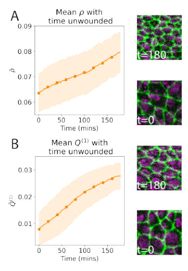
<figcaption class="paper-figure-caption"><b>Fig 2.</b> Figure 3. Mean of cell density and elongation over time. A) The mean ρ over time with orange shaded region, showing the standard deviation. B) The mean Q(1) over time with orange shaded region, showing the standard deviation.</figcaption>
</figure>
<figure class="paper-figure-card">

<figcaption class="paper-figure-caption"><b>Fig 3.</b> Figure 2. Epithelial cells as soft ellipsoids. A) Cell shapes can be approximated by polygons which we subsequently map to ellipses. Each ellipse can be assigned a position (geometric centre) as well as a long (red) and short (blue) axis computed via a q-tensor evaluated from the polygonal cell shape. B) Zoom in of wing tissue. E-cadherin-GFP (green) shows cell boundaries and Histone2-RFP (red) labels cell nuclei. A) Ep- ithelial cells with white overlay of ellipsoids.</figcaption>
</figure>
<figure class="paper-figure-card">
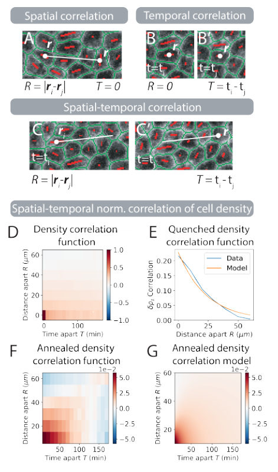
<figcaption class="paper-figure-caption"><b>Fig 4.</b> Figure 4. Spatio-temporal density correlations func- tions from experiments matches theoretical models predictions. A) Same time correlation, where R &gt; 0, separa- tion between cells is non-zero, but evaluated at the same same time point. B) Same position correlation, where the time in- terval between events is non-zero, T &gt; 0 but R = 0, position is fixed. C) Spatio-temporal correlation function diagram now varying both separation of positions R &gt; 0 and time-interval T &gt; 0. D) Heatmap of the space and time correlation of density fluctuations. Red regions indicate relatively high pos- itive correlation between the two properties and blue areas negative correlation. White parts of the map show...</figcaption>
</figure>
<figure class="paper-figure-card">
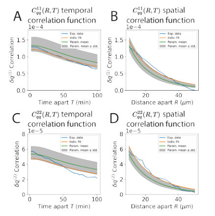
<figcaption class="paper-figure-caption"><b>Fig 5.</b> Figure 5. Fitting model parameters to correlation of cell shape. Correlations of cell shape for A, B) δQ(1) and C, D) δQ(2) for fixed T and R respectively. Graphs show the ex- perimental data (blue), fitted parameters for individual cases (green), model using averaged parameters (orange) and the standard deviation of the averaged model parameters (gray).</figcaption>
</figure>
</div>

<p><strong>Summary.</strong> This work develops a theoretical framework to analyze cell shape and density fluctuations in living epithelial tissues. By coarse-graining microscopic cell interactions into continuum stochastic equations, the authors quantify how active remodeling and passive stiffness govern tissue mechanics. The results demonstrate that these parameters can be extracted from measured correlation functions, providing quantitative insights into biological processes like wound healing.</p>
<p><strong>Why it may be interesting.</strong> While focused on biology, the mathematical machinery—deriving continuum stochastic equations and correlation functions from microscopic particle interactions—is highly relevant to non-equilibrium statistical mechanics, active matter, and many-body dynamics in soft matter systems.</p>
<details>
<summary>Detailed structure</summary>
<p><strong>Main problem.</strong> The study quantifies cell shape and density fluctuations in epithelial tissue in vivo to gain insights into the underlying mechanical properties, such as effective tissue stiffness.</p>
<p><strong>Main result.</strong> The theoretical framework successfully distinguishes between active cell shape remodeling and passive tissue stiffness, showing that active remodeling is crucial for rapid wound healing.</p>
<p><strong>Method.</strong> The authors developed a theoretical framework by coarse-graining microscopic equations of motion into continuum stochastic differential equations, allowing for the derivation of spatial-temporal correlation functions.</p>
<p><strong>Model / system.</strong> The system is epithelial tissue, modeled by interacting soft ellipsoids. The dynamics are described by continuum fields for local cell density ($\hat{
ho}$) and cell shape ($\hat{\mathbf{Q}}$), derived from microscopic interactions.</p>
<p><strong>Key observables.</strong> Cell density correlation function ($C_{
ho
ho}$), cell shape correlation function ($C_{qq}$), and derived parameters like active remodeling strength ($A$) and effective stiffness ($L$).</p>
<p><strong>Important parameters / regimes.</strong> Active shape change parameter ($A$), effective tissue stiffness ($L$), cell density ($
ho$), and mean $q$-tensor ($ar{Q}$).</p>
<p><strong>Assumptions / limitations.</strong> The approach relies on linearization around mean fields and using leading-order terms in the continuum limit; it also assumes accurate measurement of cell shapes via deep learning.</p>
<p><strong>Figures summary.</strong> Figures illustrate cell shape fluctuations in the <em>Drosophila</em> wing, show time evolution of mean density and shape parameters, and compare correlation decay rates in wild-type versus mutant tissues near wounds.</p>
<p><strong>Paper structure.</strong> The paper moves from defining the physical problem and microscopic model to deriving continuum stochastic equations via coarse-graining. It then analyzes the resulting correlation functions to fit and extract key mechanical parameters ($A$ and $L$) by comparing predictions against experimental data from wounded and perturbed tissues.</p>
</details>
<details>
<summary>Abstract</summary>
<p>Controlling changes in cell shape are crucial for many biological processes, such as tissue development and wound healing. Tissues typically are heterogeneous with a variety of cell shapes and sizes. Of particular interest are local deviations from an average cell shape and size. These fluctuations may extend and transmit across tissues, potentially offering valuable insights into tissue characteristics such as variations in effective "stiffness" or rigidity. In this study, we present a theoretical framework that captures the dynamics of epithelial cell shapes within tissue, incorporating both their average behaviour and fluctuation patterns. We model cells as interacting soft ellipsoids of varying size and aspect ratio. Coarse-graining our model, we obtain a set of continuum stochastic differential equations from which we derive spatial-temporal correlation functions. These correlation functions fit with our experimental data from the developmental process of the \textit{Drosophila} pupal wing. From the correlation functions, critical parameters representing active cell shape changes and effective tissue "stiffness" can be determined.</p>
</details>
<p><sub><a href="#top">↑ back to top</a></sub></p>

<p><a id="paper-2609.09806"></a></p>
<h3 id="dynamic-observable-subspaces-fast-simulation-of-observable-quantum-dynamics"><a href="http://arxiv.org/abs/2609.09806v1">Dynamic Observable Subspaces: Fast Simulation of Observable Quantum Dynamics</a></h3>
<p><strong>Authors:</strong> Hannes Leipold<br>
<strong>Type:</strong> theory · <strong>Category:</strong> numerical methods · <strong>PDF:</strong> <a href="https://arxiv.org/pdf/2609.09806v1">https://arxiv.org/pdf/2609.09806v1</a><br>
<strong>Analysis basis:</strong> full PDF text, analyzed in chunks
<strong>Topic relevance:</strong> <code>Keldysh / 2PI / non-Gaussian methods</code> <strong>2/5</strong> · <code>methods for driven-dissipative</code> <strong>2/5</strong> · <code>quantum measurements</code> <strong>2/5</strong> · <code>analog quantum simulation</code> <strong>1/5</strong></p>
<div class="figure-strip-hint">↔ Scroll figures horizontally</div>
<div class="paper-figures-scroll">
<figure class="paper-figure-card">
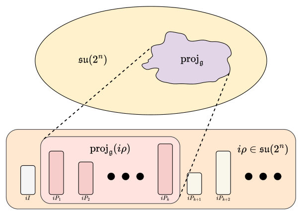
<figcaption class="paper-figure-caption"><b>Fig 1.</b> Figure 1: Observable Subspace of Quantum Dynamics. In the case that iO ∈g for observable O, the measurable dynamics of a quantum system are captured inside the Dynamic Lie Algebra g such that Tr (O ρ(T)) = Tr  O projg(ρ(T))  .</figcaption>
</figure>
<figure class="paper-figure-card">
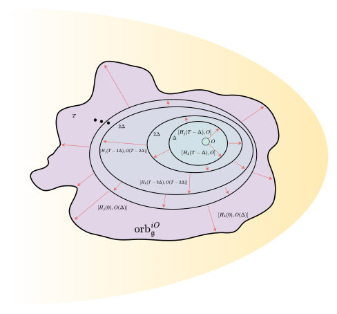
<figcaption class="paper-figure-caption"><b>Fig 2.</b> Figure 2: Liouville von Neumann Dynamics in the Heisenberg Picture. In the skew Heisenberg picture, an observable iO evolves by a Hamiltonian H(t) = P</figcaption>
</figure>
<figure class="paper-figure-card">

<figcaption class="paper-figure-caption"><b>Fig 3.</b> Figure 3: Dynamic Subspace of the Adjoint Operator. Top depicts the dynamic action of two adjoint operators adjiQ and adjiP with projCom(iQ) and projCom(iP ) as the outside space that is left stationary respectively. Bottom depicts eiθQ : ρ(t) →ρ(t + 1) where support inside proj⊥ Com(Q) colored blue is transformed while support outside (in projCom(iQ)) colored red is left stationary.</figcaption>
</figure>
<figure class="paper-figure-card">
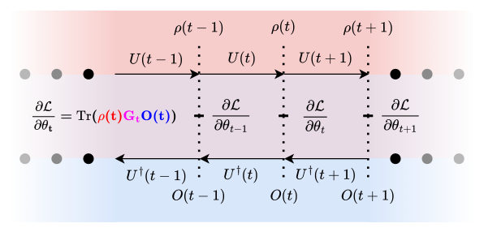
<figcaption class="paper-figure-caption"><b>Fig 4.</b> Figure 4: Meeting of Schr¨odinger iρ(t) and Heisenberg iO(t) at time t. In the mixed Schr¨odinger Heisenberg picture, iρ(t) and iO(t) meet at time t through the action of generator Gt, allowing us to compute each entry ∂ ∂θt L = ⟨iϱ(t) Gt, iO(t) ⟩in a single pass of (reverse) evolving iϱ and iO.</figcaption>
</figure>
<figure class="paper-figure-card">
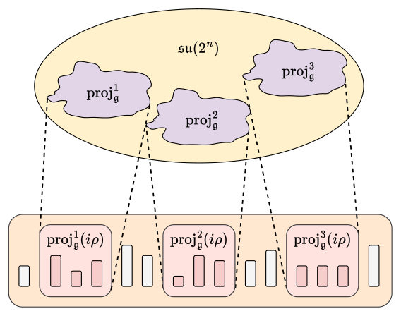
<figcaption class="paper-figure-caption"><b>Fig 5.</b> Figure 5: Decomposition into Multiple Dynamic Observable Subspaces. Given an observable O = v1 O1 + v2 O2 + v3 O3, we can define the DOS for each Oj and simulate them separately.</figcaption>
</figure>
</div>

<p><strong>Summary.</strong> This paper introduces the Dynamic Observable Subspace (DOS) framework to achieve fast, classical simulations of quantum dynamics. By restricting the evolution to the subspace spanned by relevant observables, it allows for polynomial-time calculation of expectation values and gradients for VQAs. This significantly enhances the feasibility of simulating large, complex quantum systems by avoiding the computational bottlenecks of full Hilbert space evolution.</p>
<p><strong>Why it may be interesting.</strong> This work provides a powerful, mathematically rigorous tool for simulating quantum dynamics that goes beyond standard tensor network or circuit simulation methods by exploiting the algebraic structure of the observable evolution, making it highly relevant for analyzing complex many-body dynamics.</p>
<details>
<summary>Detailed structure</summary>
<p><strong>Main problem.</strong> The paper addresses the challenge of simulating complex quantum dynamics and calculating gradients for variational quantum algorithms (VQAs) efficiently.</p>
<p><strong>Main result.</strong> It introduces the Dynamic Observable Subspace (DOS) framework, which allows for polynomial-bounded classical simulation of quantum dynamics by projecting the evolution onto a relevant, smaller subspace.</p>
<p><strong>Method.</strong> The core method involves constructing the DOS, which is the smallest subspace invariant under commutation with system generators, and then using projection operators and adjoint methods to simulate time evolution and compute gradients within this restricted space.</p>
<p><strong>Model / system.</strong> The framework is applied to general quantum systems whose dynamics are governed by unitary evolution, exemplified by Pauli string generators and the TFXY model. The dynamics are analyzed in the Heisenberg picture via expectation values.</p>
<p><strong>Key observables.</strong> The primary observables are the time-evolved observable $  ext{iO}(t)$ and the projected density operator $    ext{i}\varrho(t)$, whose expectation values are calculated within the DOS.</p>
<p><strong>Important parameters / regimes.</strong> The complexity is bounded by the polynomial size of the Dynamic Lie Algebra (DLA) associated with the generators.</p>
<p><strong>Assumptions / limitations.</strong> The method assumes that the relevant dynamics can be captured within a polynomially sized DOS, allowing for classical tractability.</p>
<p><strong>Figures summary.</strong> Figures illustrate the concept of the Observable Subspace and how nested commutation defines the DOS, while other figures compare energy landscapes for TFXY circuits using different parameter sharing schemes.</p>
<p><strong>Paper structure.</strong> The paper builds conceptually from defining the DOS via Lie algebra decomposition, establishing theorems proving the invariance of the observable and density operator within this subspace, and finally detailing algorithms for simulating time evolution and computing gradients using the adjoint method.</p>
</details>
<details>
<summary>Abstract</summary>
<p>By decomposing quantum dynamics across the Lie orbits of a list of observables, we find polynomial bounded classical simulations for the dynamics of the quantum system given a polynomial sized dynamic Lie algebra (DLA) for the generators of the quantum system. To do so, we describe how to construct the Dynamic Observable Subspace (DOS) that captures all the relevant dynamics for calculating expectation values for a specific observable for Pauli strings, diffusor mixers, and general local generators. Efficient sparse matrix representation, decoupling nonlinearity from such representation and basis construction with permissible pruning allows us to simulate the closed dynamics of such systems with hundreds of qubits. Moreover, we find that while restricted DOS circuits may not express the space of an associated Hamiltonian, they can dramatically outperform a fully expressive circuit due to the absence of the Barren Plateau. While classically simulatable, such circuits can still exhibit a form of quantum advantage through inference, act as warm starting for more expressive circuits, and find high quality trial states for Quantum Amplitude Amplification or Quantum Phase Estimation. In the simulation of quantum dynamics, we find that our restricted circuit can be simulated in polynomial time while producing high quality guiding state for downstream tasks like Quantum Phase Estimation with significantly lower energy than circuits with full expressivity.</p>
</details>
<p><sub><a href="#top">↑ back to top</a></sub></p>

<p><a id="paper-2609.10172"></a></p>
<h3 id="brst-quantization-for-the-restoration-of-broken-symmetries-a-pedagogical-example"><a href="http://arxiv.org/abs/2609.10172v1">BRST quantization for the restoration of broken symmetries: a pedagogical example</a></h3>
<p><strong>Authors:</strong> Pranav Sharma, R. J. Furnstahl<br>
<strong>Type:</strong> theory · <strong>Category:</strong> other · <strong>PDF:</strong> <a href="https://arxiv.org/pdf/2609.10172v1">https://arxiv.org/pdf/2609.10172v1</a><br>
<strong>Analysis basis:</strong> full PDF text, analyzed in chunks
<strong>Topic relevance:</strong> <code>Keldysh / 2PI / non-Gaussian methods</code> <strong>2/5</strong> · <code>methods for driven-dissipative</code> <strong>2/5</strong> · <code>analog quantum simulation</code> <strong>1/5</strong> · <code>quantum measurements</code> <strong>1/5</strong></p>
<div class="figure-strip-hint">↔ Scroll figures horizontally</div>
<div class="paper-figures-scroll">
<figure class="paper-figure-card">

<figcaption class="paper-figure-caption"><b>Fig 1.</b> FIG. 1: There are multiple physically equivalent trajectories (gauge orbits) in the phase space of a gauge theory. A gauge fixing condition (red line) picks just one point along each set of gauge orbits, defining a “gauge slice”. Figure adapted from [14].</figcaption>
</figure>
<figure class="paper-figure-card">
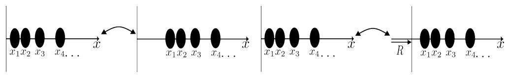
<figcaption class="paper-figure-caption"><b>Fig 2.</b> FIG. 2: a) The original system of particles has a global translational symmetry: the system can be uniformly translated to any location on the x axis and have the same intrinsic dynamics. (b) The system can now be moved arbitrarily at each moment in time, with an adjustment in R keeping it fixed as if it is at the same point on the line.</figcaption>
</figure>
<figure class="paper-figure-card">

<figcaption class="paper-figure-caption"><b>Fig 3.</b> FIG. 3: (a) The coordinate portion of the extended phase space for the two-body system, with the plane defined by the collective coordinate R and the CoM of the original DoFs X = (x1 + x2)/2 highlighted. Physically equivalent configurations of the system generated by the constraint Eq. (7) (also known as gauge orbits) lie on such a plane. (b) The CoM and collective coordinate plane with several options for gauge-fixing illustrated (c.f. the red line in Fig. 1). The choice X = 0 corresponds to the gauge-fixing choice used to exactly diagonalize the Hamiltonian in Sec. IV. The choice R = 0 reduces us back to the original problem.</figcaption>
</figure>
<figure class="paper-figure-card">
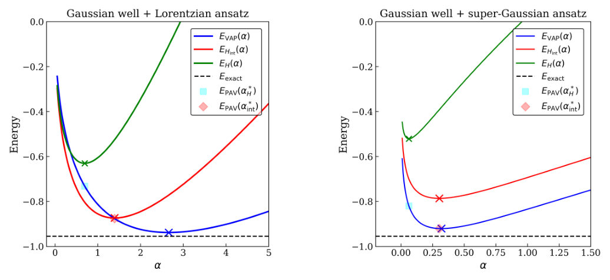
<figcaption class="paper-figure-caption"><b>Fig 4.</b> FIG. 4: Energy as a function of variational parameter α for a Gaussian potential well with (a) a Lorentzian product ansatz and (b) a super-Gaussian product ansatz. Results for VAP, Hint, and plain H are compared to the exact result and PAV evaluated with α∗ H and α∗ Hint.</figcaption>
</figure>
<figure class="paper-figure-card">

<figcaption class="paper-figure-caption"><b>Fig 5.</b> FIG. 5: Energy as a function of variational parameter α for a Woods-Saxon potential well with (a) a Lorentzian product ansatz and (b) a super-Gaussian product ansatz. Results for VAP, Hint, and plain H are compared to the exact result and PAV evaluated with H and Hint.</figcaption>
</figure>
</div>

<p><strong>Summary.</strong> This paper provides a pedagogical guide to using BRST quantization to restore broken symmetries in quantum many-body systems. By treating symmetry breaking as a gauge redundancy, the authors develop both Hamiltonian and path integral methods. This framework offers a systematic alternative to traditional projection techniques for ensuring physical consistency in complex quantum calculations.</p>
<p><strong>Why it may be interesting.</strong> The systematic application of gauge theory tools (BRST) to non-relativistic, many-body quantum mechanics provides powerful, generalizable techniques for ensuring physical observables are independent of unphysical gauge choices.</p>
<details>
<summary>Detailed structure</summary>
<p><strong>Main problem.</strong> The paper addresses the theoretical challenge of restoring symmetries (like translational invariance) in many-body quantum systems when using approximate reference state methods that inherently break these symmetries.</p>
<p><strong>Main result.</strong> It demonstrates that BRST quantization provides a systematic, gauge-theoretic framework to handle symmetry restoration, offering a potential alternative to conventional, complex projection methods.</p>
<p><strong>Method.</strong> The authors employ both Hamiltonian and path integral formulations, treating the broken symmetry as a gauge symmetry and utilizing the BRST formalism involving ghost fields.</p>
<p><strong>Model / system.</strong> The primary demonstration system is a simple one-dimensional two-body interacting system, but the formalism is designed to be generalizable to higher dimensions and more complex many-body contexts.</p>
<p><strong>Key observables.</strong> Gauge invariant observables, the intrinsic spectrum of the system, and the cancellation of symmetry-breaking errors in calculated expectation values.</p>
<p><strong>Important parameters / regimes.</strong> The analysis involves the collective coordinate $R$, the gauge-fixing parameter $\mu$, and the structure of the BRST charge $Q$.</p>
<p><strong>Assumptions / limitations.</strong> The analysis assumes that the BRST approach correctly captures the physics, and it compares results derived from different gauge-fixing prescriptions (e.g., Lagrange multipliers vs. width parameters).</p>
<p><strong>Figures summary.</strong> Figures illustrate the existence of gauge orbits in the extended phase space and compare variational energy calculations using different ansatze (VAP, Hint, recentered gauge-slice) for the $N=2$ system.</p>
<p><strong>Paper structure.</strong> The paper progresses from a pedagogical introduction using a simple two-body model to developing the Hamiltonian and path integral formalisms. It then compares different gauge-fixing techniques, culminating in variational energy comparisons.</p>
</details>
<details>
<summary>Abstract</summary>
<p>We present a pedagogical showcase of BRST quantization for restoring symmetries in nuclear many-body systems as a reformulation and potential alternative to conventional projection methods. The formalism is illustrated using translational invariance for a simple system of two interacting masses in one dimension, but with an eye toward generalizing to more particles, higher dimensions, and other symmetries. We explain the considerations underlying particular choices within the BRST construction, and develop both Hamiltonian and path integral formulations to provide guidance for the variety of many-body and effective field theory contexts where gauge fixing for symmetry restoration might be useful. For the demonstration system we show how to diagonalize within the extended BRST phase space, how variation after projection is recovered for product reference states, how the corresponding gauge-fixed functional integral is constructed, and how collective zero modes are isolated and controlled. Throughout, we keep in mind extensions of BRST symmetry to various approximation schemes as a guide for consistent symmetry restoration.</p>
</details>
<p><sub><a href="#top">↑ back to top</a></sub></p>

<p><a id="paper-2609.10312"></a></p>
<h3 id="programmable-photonic-state-fusion-via-heralded-storage-of-asynchronously-generated-resources"><a href="http://arxiv.org/abs/2609.10312v1">Programmable photonic state fusion via heralded storage of asynchronously generated resources</a></h3>
<p><strong>Authors:</strong> Mustafa Gündoğan, Dennis Rätzel<br>
<strong>Type:</strong> theory · <strong>Category:</strong> quantum information and computing · <strong>PDF:</strong> <a href="https://arxiv.org/pdf/2609.10312v1">https://arxiv.org/pdf/2609.10312v1</a><br>
<strong>Analysis basis:</strong> full PDF text, analyzed in chunks
<strong>Topic relevance:</strong> <code>analog quantum simulation</code> <strong>2/5</strong> · <code>interference shaping light</code> <strong>1/5</strong> · <code>methods for driven-dissipative</code> <strong>1/5</strong> · <code>quantum measurements</code> <strong>1/5</strong></p>
<div class="figure-strip-hint">↔ Scroll figures horizontally</div>
<div class="paper-figures-scroll">
<figure class="paper-figure-card">

<figcaption class="paper-figure-caption"><b>Fig 1.</b> FIG. 1. Bosonic fusion for the clock-state implementation. (a) A specific realization of our fusion scheme for generating the photonic clock state considered for clock interferometry in [16, 17]. Once an elementary block ∼X† j + Y † j is heralded, the herald is fed forward to the tunable loop couplers, which are set to the programmed coupling xj. Successful loading places the newly generated photons into the same circulat- ing modes as the previously stored photons, removing their generation-time labels. Repeating the procedure for N suc- cessful loads yields the fused output. (b) Mode-occupation amplitudes obtained with the roots-of-unity phase settings for the case of N = 4. The index m...</figcaption>
</figure>
<figure class="paper-figure-card">
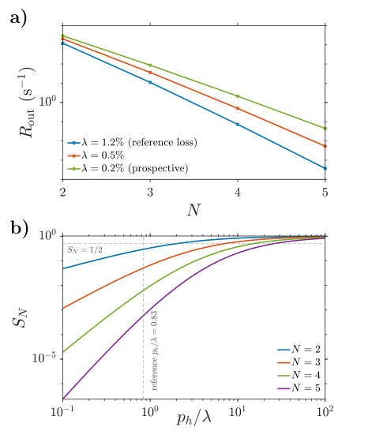
<figcaption class="paper-figure-caption"><b>Fig 2.</b> FIG. 2. Performance of the nb = 2 path–frequency realization. (a) Detected rates from Eq. (15) for frep = 10 MHz, ph = 10−2, η = 0.9, and ideal dump-port monitoring. The curves corre- spond to round-trip losses of 1.2%, 0.5%, and 0.2% per stored photon. The 1.2% value is a reference loss rather than a demonstrated end-to-end operating point. (b) Waiting sur- vival SN,2 as a function of ph/λ for N = 2, . . . , 5. The dashed lines mark SN,2 = 1/2 and the reference ratio ph/λ ≃0.83.</figcaption>
</figure>
<figure class="paper-figure-card">

<figcaption class="paper-figure-caption"><b>Fig 3.</b> FIG. 3. Source and storage architecture for the multiphoton clock state. Two coherently driven SPDC sources produce signal–idler pairs with signal frequencies f1 and f2, respec- tively, while the idlers share the same frequency fi. The idlers are interfered in a linear-optical Bell-state analyzer, and the accepted BSM outcome heralds the corresponding signal su- perposition. A half-wave plate in the f2 signal arm, followed by the final PBS, maps the two polarization alternatives onto the path–frequency configurations X† j and Y † j . The BSM her- ald is fed forward to the couplers of the U and L storage loops, LU and LL, which are operated at the programmed loading strength xj = 1/(1 + j)....</figcaption>
</figure>
</div>

<p><strong>Summary.</strong> This paper details a novel protocol for fusing multiple, independently generated photonic quantum states into a single, highly entangled resource using active quantum storage loops. By mathematically modeling the state accumulation via polynomial factorization, the authors overcome the challenge of asynchronous generation times. This technique is demonstrated for creating NOON states, crucial for enhancing sensitivity in quantum metrology applications like photonic clock interferometry.</p>
<p><strong>Why it may be interesting.</strong> This work provides a detailed theoretical blueprint for building large-scale quantum resources (like high-photon-number entangled states) from weak, probabilistic sources, which is central to quantum networking and quantum simulation.</p>
<details>
<summary>Detailed structure</summary>
<p><strong>Main problem.</strong> The core challenge is fusing photonic quantum states generated probabilistically in asynchronous trials into a single, highly entangled state required for multiphoton protocols.</p>
<p><strong>Main result.</strong> The authors propose a fusion protocol using active storage loops that successfully constructs programmable multi-photon entangled states, such as NOON states, by removing generation-time labels.</p>
<p><strong>Method.</strong> The method involves sequentially loading independently heralded photonic states into storage loops, modeled by polynomial factorization, and optimizing the loading coupling strength for efficiency.</p>
<p><strong>Model / system.</strong> The system is based on photonic state fusion utilizing active quantum memory loops (U and L modes) and heralded sources (SPDC). The state evolution is mathematically described by successive loading operations leading to a product of linear factors.</p>
<p><strong>Key observables.</strong> The detected rate ($R_{	ext{out},N}$) of the final entangled state, the survival probability ($S_{N,n_b}$), and the resulting NOON-type state coefficients.</p>
<p><strong>Important parameters / regimes.</strong> Loading step index ($j$), storage loop coupling strength, source waiting time, and round-trip loss ($\lambda$).</p>
<p><strong>Assumptions / limitations.</strong> The two alternatives ($X$ and $Y$) undergo the same loading transformation, and the analysis relies on specific optimal scheduling conditions for loading probability.</p>
<p><strong>Figures summary.</strong> Figures illustrate the bosonic fusion scheme, showing the process flow through tunable couplers, and depict mode-occupation amplitudes demonstrating the formation of the NOON state.</p>
<p><strong>Paper structure.</strong> The paper develops the fusion protocol by first addressing the temporal mismatch, deriving the mathematical framework using polynomial factorization, and finally applying this to calculate the achievable rate for photonic clock interferometry.</p>
</details>
<details>
<summary>Abstract</summary>
<p>Probabilistic photonic sources generate elementary states in different trials, whereas multiphoton protocols require them to interfere in common temporal modes. We propose a fusion protocol that overcomes this mismatch by successively loading independently heralded photonic states into active storage loops. Conditioning on vacuum in monitored dump modes selects events in which each newly generated state is transferred into the same circulating modes as the photons already stored, thereby removing its generation time label. Provided the two alternatives of each elementary state undergo the same loading transformation, the accumulated state is described by a product of programmable linear factors, allowing a target superposition to be constructed by polynomial factorization. Adjusting the storage loop coupling as the state grows substantially improves the loading efficiency, changing the faster-than-exponential penalty of fixed balanced couplers to exponential scaling. We apply the protocol to two-photon path--frequency states for photonic clock interferometry and estimate the detected rate including source waiting time and round-trip loss.</p>
</details>
<p><sub><a href="#top">↑ back to top</a></sub></p>

<p><a id="paper-2609.10190"></a></p>
<h3 id="pyece-a-python-implementation-of-the-embedded-cluster-expansion"><a href="http://arxiv.org/abs/2609.10190v1">pyeCE: A Python Implementation of the Embedded Cluster Expansion</a></h3>
<p><strong>Authors:</strong> Yann L. Müller, Claire A. Paetsch, Anirudh Raju Natarajan<br>
<strong>Type:</strong> theory · <strong>Category:</strong> statistical mechanics · <strong>PDF:</strong> <a href="https://arxiv.org/pdf/2609.10190v1">https://arxiv.org/pdf/2609.10190v1</a><br>
<strong>Analysis basis:</strong> full PDF text, analyzed in chunks
<strong>Topic relevance:</strong> <code>analog quantum simulation</code> <strong>2/5</strong> · <code>methods for driven-dissipative</code> <strong>2/5</strong> · <code>Keldysh / 2PI / non-Gaussian methods</code> <strong>1/5</strong></p>
<div class="figure-strip-hint">↔ Scroll figures horizontally</div>
<div class="paper-figures-scroll">
<figure class="paper-figure-card">
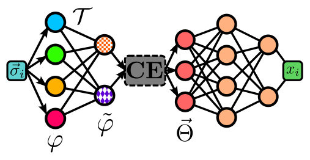
<figcaption class="paper-figure-caption"><b>Fig 1.</b> FIG. 2. Schematic of the embedded cluster expansion formalism. Given the neighborhood configuration ⃗σi of site i, the site-basis functions φ are projected onto the embedded site-basis functions ˜φ through the learned transformation T . Symmetry-invariant site descriptors ⃗Θ are then computed as in a conventional cluster expan- sion. These descriptors serve as input to a feedforward neural net- work that evaluates the site property xi. The dependence of these quantities on the configuration is suppressed for clarity.</figcaption>
</figure>
<figure class="paper-figure-card">
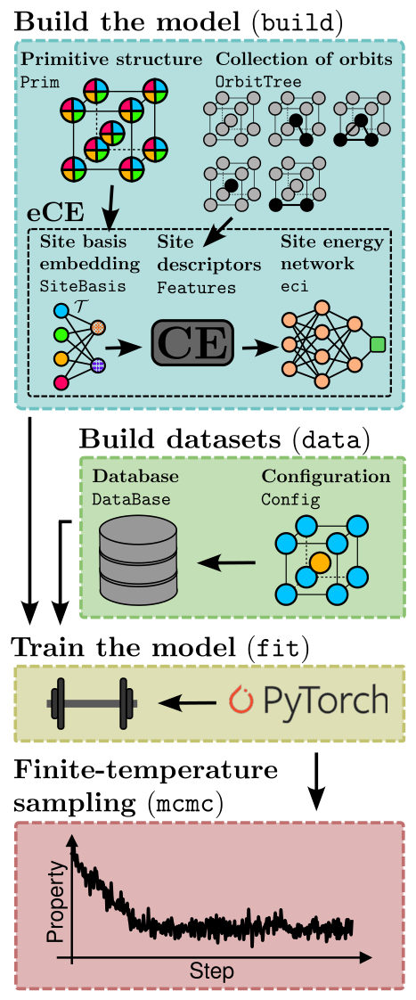
<figcaption class="paper-figure-caption"><b>Fig 2.</b> FIG. 1. General workflow of pyeCE. (1) The eCE model is con- structed from the site-basis embedding, the site descriptors, and the site energy model. (2) A training set of symmetrically distinct or- derings is enumerated, evaluated with first-principles calculations, and mapped onto the parent lattice. (3) The model is trained using PyTorch by simultaneously optimizing the transformation matrix T and the site energy model. (4) Finite-temperature properties are predicted by Monte Carlo simulations.</figcaption>
</figure>
<figure class="paper-figure-card">

<figcaption class="paper-figure-caption"><b>Fig 3.</b> FIG. 3. Illustration of the embedded site-basis functions that map c = 4 species onto k = 3. The four chemical species are represented by four colors (yellow, blue, red, and green). Each species maps to one of four linearly dependent vectors (1, ˜φ1, ˜φ2)T in R3.</figcaption>
</figure>
<figure class="paper-figure-card">

<figcaption class="paper-figure-caption"><b>Fig 4.</b> FIG. 4. Illustration of the construction of the input matrix η. The example configuration contains 4 atomic sites (1, 2, 3, and 4). The neighborhood of each site consists of the site itself (A) and its 4 near- est neighbors (B, C, D, and E). Element ηij of the input matrix holds the chemical species at neighborhood position j of the ith atomic site.</figcaption>
</figure>
<figure class="paper-figure-card">
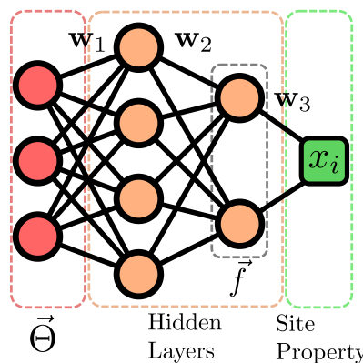
<figcaption class="paper-figure-caption"><b>Fig 5.</b> FIG. 6. Illustration of a site property feedforward neural network. The input layer corresponds to the site descriptors ⃗Θ. The neural network is composed of 2 hidden layers. The final hidden layer pro- duces the latent features ⃗f. The final neuron outputs the site prop- erty xi. The weights w = {w1, w2, w3} and biases in each layer are the trainable parameters.</figcaption>
</figure>
</div>

<p><strong>Summary.</strong> This paper introduces pyeCE, a Python library implementing the embedded cluster expansion (eCE) to overcome the computational limitations of modeling high-entropy alloys. By using machine learning to reduce the complexity of chemical species, it accurately predicts thermodynamic properties like short-range order and hydrogen solubility. This provides a powerful, modular tool for studying complex, disordered materials.</p>
<p><strong>Why it may be interesting.</strong> While focused on condensed matter thermodynamics, the use of machine learning (NNs) to parametrize complex many-body interactions and the development of a modular simulation framework are highly relevant to developing advanced Hamiltonians or effective potentials for quantum simulation studies.</p>
<details>
<summary>Detailed structure</summary>
<p><strong>Main problem.</strong> Predicting the finite-temperature thermodynamics of complex alloys, especially high-entropy alloys, which are intractable using conventional cluster expansion methods.</p>
<p><strong>Main result.</strong> The pyeCE library successfully models short-range order and hydrogen solubility in complex multi-component alloys by employing an embedded cluster expansion formalism.</p>
<p><strong>Method.</strong> The authors developed an open-source library implementing the embedded cluster expansion (eCE), which uses machine learning to map many chemical species onto a smaller set of effective species.</p>
<p><strong>Model / system.</strong> The model is applied to multi-component alloys (e.g., 9-component refractory alloys, Mo-Nb-W systems) to calculate thermodynamic properties. The eCE uses neural networks trained on DFT data to predict site properties based on symmetry-adapted descriptors.</p>
<p><strong>Key observables.</strong> Short-range order, hydrogen uptake ($\langle H/M 
angle$), local coordination preferences, and total energy.</p>
<p><strong>Important parameters / regimes.</strong> Temperature (finite-temperature simulations), chemical potentials ($\mu_H$), and the dimensionality reduction factor ($k$).</p>
<p><strong>Assumptions / limitations.</strong> The conventional cluster expansion becomes intractable for systems with more than four chemical species, necessitating the eCE embedding approach. Metal atoms are assumed immobile during hydrogen dissolution simulations.</p>
<p><strong>Figures summary.</strong> Figures illustrate the general workflow (eCE construction $
ightarrow$ training $
ightarrow$ MC sampling), the mathematical steps of the embedding process, and specific results showing how alloy chemistry controls hydrogen solubility and local H-M pair preferences.</p>
<p><strong>Paper structure.</strong> The paper introduces the eCE formalism, details the computational workflow (descriptor construction, NN training, MC sampling), and validates the method on two distinct material systems: a 9-component refractory alloy and a hydrogen-dissolving Mo-Nb-W alloy.</p>
</details>
<details>
<summary>Abstract</summary>
<p>The cluster expansion is a widely used approach for predicting the finite-temperature thermodynamics of alloys from zero-kelvin first-principles calculations, but its conventional formulation becomes intractable for materials with more than three or four chemical species. High-entropy alloys have therefore remained largely out of reach. We present pyeCE, an open-source Python library that implements the embedded cluster expansion (eCE), in which machine learning maps many chemical species onto a smaller set of effective species and thereby limits the growth in the number of cluster functions. pyeCE provides the complete modeling workflow, including the construction of symmetry-adapted descriptors with a learnable per-sublattice chemical embedding, a neural-network energy model, ladder-based training, uncertainty quantification, and finite-temperature simulations through Monte Carlo sampling. Built on the PyTorch and pymatgen libraries, it supports systems with multiple species on multiple sublattices and runs on graphics processing units. We demonstrate the package on two material systems. In the first, a single model spanning the full composition space of a 9-component refractory alloy resolves short-range order and order--disorder behavior. This model enables rapid screening for compositions with strong Cr clustering, a feature linked to the formation of a continuous, corrosion-resistant oxide scale. In the second, a model of hydrogen dissolution in a Mo--Nb--W alloy reproduces the composition dependence of hydrogen uptake and resolves the interstitial environments that hydrogen occupies. The modular design of pyeCE allows it to be extended to problems beyond alloy thermodynamics, including kinetics, defect energetics, and the coupling of chemical order to magnetic and vibrational degrees of freedom.</p>
</details>
<p><sub><a href="#top">↑ back to top</a></sub></p>

<p><a id="paper-2609.09518"></a></p>
<h3 id="the-role-of-concentration-in-determining-nacl-nucleation-mechanism-a-story-of-pathways-coexistence"><a href="http://arxiv.org/abs/2609.09518v1">The Role of Concentration in Determining NaCl Nucleation Mechanism: A Story of Pathways Coexistence</a></h3>
<p><strong>Authors:</strong> Porhouy Minh, Sapna Sarupria<br>
<strong>Type:</strong> theory · <strong>Category:</strong> statistical mechanics · <strong>PDF:</strong> <a href="https://arxiv.org/pdf/2609.09518v1">https://arxiv.org/pdf/2609.09518v1</a><br>
<strong>Analysis basis:</strong> full PDF text, analyzed in chunks
<strong>Topic relevance:</strong> <code>methods for driven-dissipative</code> <strong>2/5</strong> · <code>quantum measurements</code> <strong>2/5</strong> · <code>Keldysh / 2PI / non-Gaussian methods</code> <strong>1/5</strong></p>
<div class="figure-strip-hint">↔ Scroll figures horizontally</div>
<div class="paper-figures-scroll">
<figure class="paper-figure-card">
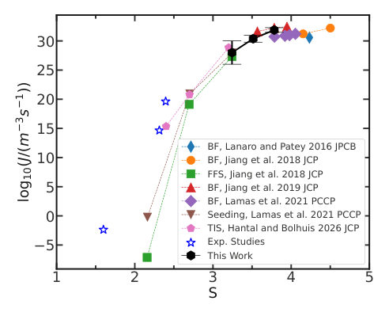
<figcaption class="paper-figure-caption"><b>Fig 1.</b> Figure 1: Nucleation rate, log10(J/(m−3s−1)), as a function of level of supersaturation, S. Results from this work (black hexagons) are provided in context of previous simulation studies using BF [15, 16, 19, 30], FFS [15], TIS [20] and seeding methods [19], as well as experimental measurements [27–29]. Error bars denote the uncertainty in the computed nucleation rates.</figcaption>
</figure>
<figure class="paper-figure-card">

<figcaption class="paper-figure-caption"><b>Fig 2.</b> Figure 2: (A-C) Average pB projection of configurations from systems at (A) 12, (B) 13, and (C) 14 mol/kg onto ntf (x-axis) and θntf (y-axis). The plots are colored by the committor value from 0 to 1. The bin size for the x-axis is 1, and 0.02 for the y-axis. The representative snapshots shown in the insets of Panels A-C correspond to the configuration marked by the green star. The snapshot configurations have an ntf value of 26. Na+ and Cl−ions of ntf are represented in blue and cyan, respectively. Amorphous ions in nAO that do not overlap with ntf are shown in gray. (D-E) nAO distribution of transition state configurations (0.45 ≤pB ≤0.55) at (D) 12, (E) 13, and (F) 14 mol/kg.</figcaption>
</figure>
<figure class="paper-figure-card">

<figcaption class="paper-figure-caption"><b>Fig 3.</b> Figure 3: Joint probability distribution from nucleation trajectories of the largest crystalline nucleus (ntf) and the largest amorphous aggregate overlapping with ntf (nAO) for systems at (A) 12, (B) 13, and (C) 14 mol/kg. The joint probability is computed from RPE-weighted configurations sampled along reactive trajectories using bin widths of one in both order parameters.</figcaption>
</figure>
<figure class="paper-figure-card">

<figcaption class="paper-figure-caption"><b>Fig 4.</b> Figure 4: Conditional probability distribution from nucleation trajectories of ntf for a given nAO size for systems at (A) 12, (B) 13, and (C) 14 mol/kg. The green crosses mark the maximum of each conditional probability along a given nAO bin. The conditional probability is calculated from the joint probability distributions shown in Fig. 3.</figcaption>
</figure>
<figure class="paper-figure-card">

<figcaption class="paper-figure-caption"><b>Fig 5.</b> Figure 4 shows the conditional probability distributions for the three concentrations studied. If nucleation proceeds predominantly through a one-step mechanism, the maxima of P(ntf|nAO) are expected to remain close to the ntf = nAO line, reflecting concerted growth in both dense ion aggregation and crystallinity. In contrast, deviation of the maxima away from this diagonal indicates increasing decoupling between dense cluster formation and crystalline ordering, consistent with two-step-like growth behavior.</figcaption>
</figure>
</div>

<p><strong>Summary.</strong> This work investigates the nucleation mechanism of NaCl in solution by analyzing reactive pathways across varying supersaturations. Using advanced path sampling techniques, the authors demonstrate that the mechanism is not strictly one-step or two-step, but rather an ensemble of competing pathways whose relative probabilities change continuously with concentration. This provides a unified view that resolves previous mechanistic disagreements in chemical physics.</p>
<p><strong>Why it may be interesting.</strong> While focused on classical nucleation, the methodology—using advanced path sampling and analyzing the continuous evolution of competing reactive pathways—provides a powerful framework for understanding phase transitions in complex, non-equilibrium systems relevant to AMO physics.</p>
<details>
<summary>Detailed structure</summary>
<p><strong>Main problem.</strong> The study aims to resolve the long-standing debate regarding the microscopic mechanism of crystal nucleation in aqueous sodium chloride (NaCl), specifically whether the process is a simple one-step aggregation or a more complex, two-step process involving amorphous intermediates.</p>
<p><strong>Main result.</strong> The nucleation mechanism is not fixed but exists as an ensemble of competing reactive pathways whose relative probabilities vary continuously with the supersaturation level, reconciling previous contradictory reports.</p>
<p><strong>Method.</strong> The authors employed unbiased path sampling techniques ($\infty$RETIS) combined with advanced analysis tools like reaction coordinate analysis, joint/conditional probability distributions, and free energy landscape mapping to characterize the reactive trajectories.</p>
<p><strong>Model / system.</strong> The system studied is the nucleation of crystalline sodium chloride (NaCl) from an aqueous solution, investigated across three distinct supersaturation regimes (12, 13, and 14 mol/kg).</p>
<p><strong>Key observables.</strong> Nucleation rate ($J$), crystalline nucleus size ($ntf$), crystalline ordering ($ heta_{ntf}$), amorphous aggregate size ($nAO$), and the committor probability ($p_B$).</p>
<p><strong>Important parameters / regimes.</strong> Supersaturation ($S$) levels (3.2 to 3.8), which control the relative probability of different reactive pathways.</p>
<p><strong>Assumptions / limitations.</strong> The analysis assumes that the system can be described by an ensemble of competing reactive pathways rather than requiring distinct, isolated metastable free energy basins.</p>
<p><strong>Figures summary.</strong> Figures compare calculated nucleation rates against prior studies, and joint/conditional probability distributions show how the coupling between amorphous and crystalline growth changes with concentration, moving from coupled (one-step) to decoupled (two-step-like) behavior.</p>
<p><strong>Paper structure.</strong> The paper progresses by first establishing the general framework using path sampling, then using order parameters and probability distributions to diagnose the coupling between amorphous and crystalline growth, and finally synthesizing these findings to propose a continuous ensemble view of the nucleation process.</p>
</details>
<details>
<summary>Abstract</summary>
<p>Deciphering the microscopic details of crystal nucleation remains a key open problem in chemical physics. For aqueous sodium chloride (NaCl), the extent to which nucleation involves amorphous ion aggregation, and the supersaturation regime in which two-step-like behavior emerges, remains actively debated. In this work, we examine NaCl nucleation at 12, 13, and 14 mol/kg ($S = 3.2, 3.5, 3.8$) using unbiased path sampling with $\infty$RETIS. Through a combination of reaction coordinate analysis, joint and conditional probability distributions, diffusion tensor analysis, and conditional free energy landscapes, we identify nucleation pathways without a priori mechanistic assumptions. While all concentrations are governed by the same reaction coordinate, indicating that nucleus growth and structural ordering are central to crossing the barrier, the nature of reactive trajectories changes with supersaturation. At lower concentrations, nucleation mainly occurs via tightly coupled increases in cluster size and ordering, compatible with a one-step-like mechanism. As concentration increases, amorphous aggregation becomes increasingly decoupled from crystallization, and pathways involving substantial amorphous growth prior to crystallization become progressively more probable. Importantly, these pathways coexist within a single broad reaction channel rather than proceeding through distinct metastable intermediate states. Together, these results reconcile earlier, contradictory reports on NaCl nucleation mechanisms and support a view of nucleation as an ensemble of competing reactive pathways whose relative probabilities vary continuously with supersaturation. More broadly, our findings illustrate that substantial mechanistic diversity can emerge within a classical nucleation framework, without requiring distinct non-classical descriptions.</p>
</details>
<p><sub><a href="#top">↑ back to top</a></sub></p>

<p><a id="paper-2609.10186"></a></p>
<h3 id="fast-accurate-and-scalable-fermionic-neural-networks-via-translation-equivariance"><a href="http://arxiv.org/abs/2609.10186v1">Fast, Accurate, and Scalable Fermionic Neural Networks via Translation Equivariance</a></h3>
<p><strong>Authors:</strong> David D. Dai, Yen-Ting Lin, Marin Soljačić<br>
<strong>Type:</strong> theory · <strong>Category:</strong> strongly correlated electrons · <strong>PDF:</strong> <a href="https://arxiv.org/pdf/2609.10186v1">https://arxiv.org/pdf/2609.10186v1</a><br>
<strong>Analysis basis:</strong> full PDF text, analyzed in chunks
<strong>Topic relevance:</strong> <code>analog quantum simulation</code> <strong>2/5</strong> · <code>methods for driven-dissipative</code> <strong>2/5</strong></p>
<div class="figure-strip-hint">↔ Scroll figures horizontally</div>
<div class="paper-figures-scroll">
<figure class="paper-figure-card">
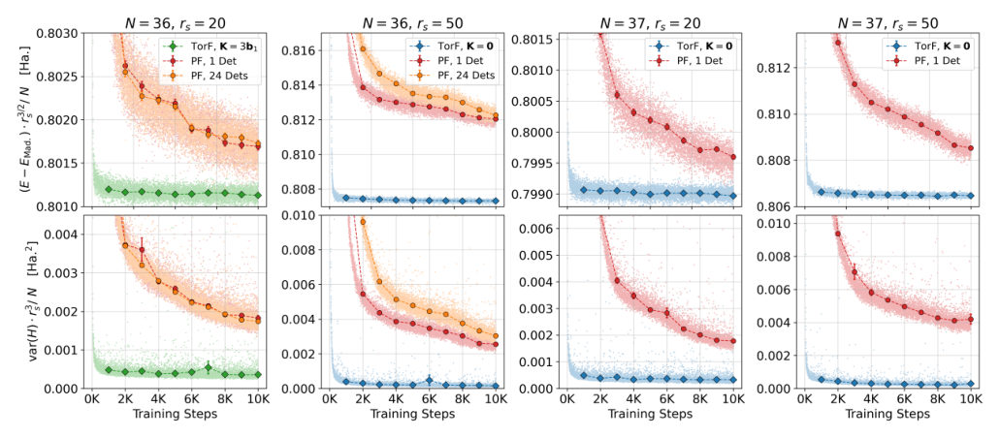
<figcaption class="paper-figure-caption"><b>Fig 1.</b> FIG. 1. Medium-system comparison of TorFormer (TorF) and Psiformer (PF)’s expected energy and energy variance versus training steps. Error bars every 1K steps show inference energies estimated from fresh Markov chains, while the scatter plots show training estimates logged at each step. TorFormer is both faster and more accurate.</figcaption>
</figure>
<figure class="paper-figure-card">
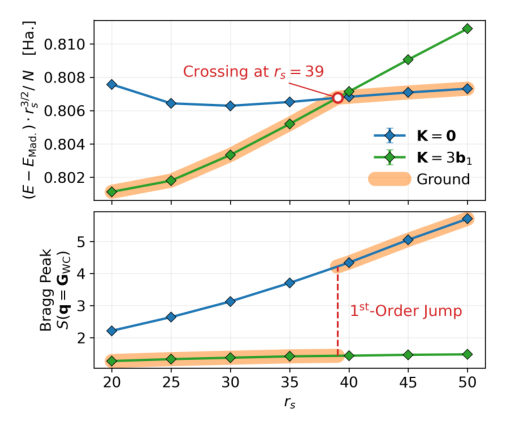
<figcaption class="paper-figure-caption"><b>Fig 2.</b> FIG. 3. TorFormer’s energy per particle and Bragg peak height for sectors K = 3b1 and K = 0, plotted as a function of density parameter rs. The symmetry-protected crossing at rs = 39 causes a jump in the static structure factor, which is a finite-size realization of the phase transition.</figcaption>
</figure>
<figure class="paper-figure-card">

<figcaption class="paper-figure-caption"><b>Fig 3.</b> FIG. 2. Pair correlation function (top row) and static struc- ture factor (bottom row) for rs = 20.0 (left column) and rs = 50.0 (right column). The expected phase is apparent in both observables.</figcaption>
</figure>
<figure class="paper-figure-card">

<figcaption class="paper-figure-caption"><b>Fig 4.</b> FIG. 4. N = 91, rs = 40.0 training curves. Top panel: energy comparison between TorFormer, the previous best NQS (Psi- former+SWPA), and Slater-Jastrow-backflow diffusion Monte Carlo. TorFormer is more accurate than Psiformer+SWPA while using less than a tenth of the training steps. Bottom: TorFormer is a near-exact eigenstate of the triangular lattice point-group generators with eigenvalue −1 for both.</figcaption>
</figure>
<figure class="paper-figure-card">

<figcaption class="paper-figure-caption"><b>Fig 5.</b> FIG. 5. N = 91, rs = 40.0 correlations. Top left: pair cor- relation. The pattern is smeared, because the model learned a superposition of the (6, 5) and (5, 6) crystal embeddings. Top right: 2D map of static structure factor. Each of the two crystal embeddings contributes a set of six Bragg peaks for twelve total. Bottom: symmetry-averaged static structure factor versus wavevector norm, showing the Bragg peak.</figcaption>
</figure>
</div>

<p><strong>Summary.</strong> This paper introduces TorFormer, a novel neural quantum state designed to incorporate exact symmetries, specifically total momentum, into the wavefunction ansatz. By enforcing translation equivariance, it achieves superior training speed and significantly lower variational energies for the 2D electron gas compared to prior methods. This work demonstrates that symmetry-aware neural networks can provide an accurate and efficient route to solving large-scale, strongly correlated quantum many-body problems.</p>
<p><strong>Why it may be interesting.</strong> While focused on 2DEG, the emphasis on symmetry-enforced neural networks for strongly correlated systems provides a powerful, generalizable tool for simulating complex quantum matter beyond standard QMC or DMRG limitations.</p>
<details>
<summary>Detailed structure</summary>
<p><strong>Main problem.</strong> Developing fast, accurate, and scalable methods to solve the many-electron Schrödinger equation for strongly correlated systems using Neural Quantum States (NQS).</p>
<p><strong>Main result.</strong> The proposed TorFormer architecture significantly improves both training speed and final variational energy compared to previous state-of-the-art NQS methods.</p>
<p><strong>Method.</strong> The authors introduce TorFormer, a neural network wavefunction designed to be an exact eigenstate of the total momentum, enforcing translation equivariance by construction.</p>
<p><strong>Model / system.</strong> The study focuses on the 2D electron gas, governed by a Hamiltonian involving kinetic and Coulomb interaction terms, and investigates the phase transition between Fermi liquid and Wigner crystal states.</p>
<p><strong>Key observables.</strong> Variational energy, energy variance, pair correlation function, and static structure factor.</p>
<p><strong>Important parameters / regimes.</strong> Density parameter $r_s$ (tested at 30.0 and 40.0) and particle number $N$ (tested up to $N=91$).</p>
<p><strong>Assumptions / limitations.</strong> The method assumes the Hamiltonian commutes with translation, allowing the use of total momentum as a symmetry operator.</p>
<p><strong>Figures summary.</strong> Figures compare energy convergence curves (TorFormer vs. Psiformer), show pair correlation functions diagnosing liquid/crystal phases, and plot energy vs. $r_s$ to identify symmetry-protected crossings.</p>
<p><strong>Paper structure.</strong> The paper introduces the problem, details the TorFormer architecture leveraging momentum eigenstates, presents quantitative comparisons of energy convergence and final energies against benchmarks like Psiformer and DMC, and concludes by demonstrating the method's scalability.</p>
</details>
<details>
<summary>Abstract</summary>
<p>We demonstrate that designing a neural quantum state to be an exact eigenstate of the Hamiltonian's symmetries significantly improves both training speed and final variational energy. For the 2D electron gas, we design TorFormer, a neural network wavefunction which is an exact eigenstate of the total momentum. TorFormer describes both the Fermi liquid and Wigner crystal with no supervision and significantly outperforms Psiformer-based references up to large system sizes. For $r_s = 30.0$ and $40.0$ at $N=91$, we compare TorFormer trained for $8\mathrm{K}$ steps against the previous best NQS, which required $100\mathrm{K}$ training steps. Our improvement to the total energy at $r_s = 40.0$, excluding the trivial Madelung part, is $0.12\%$---enormous compared to the tiny differences separating phases. Relative to Slater-Jastrow-backflow diffusion Monte Carlo, TorFormer's energy decrease is roughly $9.8$ times that of the previous best NQS. Our work demonstrates that neural quantum states can both accurately and efficiently solve large-scale problems.</p>
</details>
<p><sub><a href="#top">↑ back to top</a></sub></p>

<p><a id="paper-2609.09741"></a></p>
<h3 id="orbital-selective-electronic-modes-induced-by-doping-and-originating-from-distinct-spin-excitations-an-essential-feature-of-orbital-selective-mott-transition"><a href="http://arxiv.org/abs/2609.09741v1">Orbital-selective electronic modes induced by doping and originating from distinct spin excitations: an essential feature of orbital-selective Mott transition</a></h3>
<p><strong>Authors:</strong> Masanori Kohno<br>
<strong>Type:</strong> theory · <strong>Category:</strong> strongly correlated electrons · <strong>PDF:</strong> <a href="https://arxiv.org/pdf/2609.09741v1">https://arxiv.org/pdf/2609.09741v1</a><br>
<strong>Analysis basis:</strong> full PDF text, analyzed in chunks
<strong>Topic relevance:</strong> <code>analog quantum simulation</code> <strong>2/5</strong> · <code>Keldysh / 2PI / non-Gaussian methods</code> <strong>1/5</strong> · <code>methods for driven-dissipative</code> <strong>1/5</strong></p>
<div class="figure-strip-hint">↔ Scroll figures horizontally</div>
<div class="paper-figures-scroll">
<figure class="paper-figure-card">
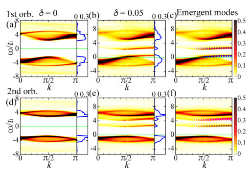
<figcaption class="paper-figure-caption"><b>Fig 1.</b> FIG. 1: Am δ=0(k, ω)t1 [(a), (d)] and Am δ=0.05(k, ω)t1 [(b), (c), (e), (f)] for the 1st orbital (m = 1) [(a)–(c)] and 2nd orbital (m = 2) [(d)–(f)]. The blue curves on the right-hand side show ρ(ω)t1 calculated from Am δ (k, ω)t1 on the left in (a), (b), (d), and (e). The dispersion relations of the doping- induced modes, ω = eS+ k−π</figcaption>
</figure>
<figure class="paper-figure-card">

<figcaption class="paper-figure-caption"><b>Fig 2.</b> FIG. 2: Emergence mechanism of spin excited states as elec- tronic excited states upon doping. (a) Undoped ground state |GS⟩Nh=0. (b) One-hole-doped ground state |GS⟩Nh=1, which has significant overlap with the state obtained by removing an electron with Fermi momentum kF from the first orbital of |GS⟩Nh=0. The doped site is enclosed by the dashed or- ange line. (c), (d) States obtained by adding an electron with momentum k to the doped orbital [(c)] and undoped orbital [(d)] at the doped site in |GS⟩Nh=1, which have sig- nificant overlap with spin excited states S±,γ k−kF|GS⟩Nh=0 [(c)] and T ±,γ k−kF|GS⟩Nh=0 [(d)], respectively, at half filling. The states enclosed by the dashed orange...</figcaption>
</figure>
<figure class="paper-figure-card">
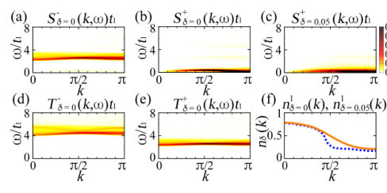
<figcaption class="paper-figure-caption"><b>Fig 3.</b> FIG. 3: (a) S− δ=0(k, ω)t1. (b) S+ δ=0(k, ω)t1. (c) S+ δ=0.05(k, ω)t1. (d) T − δ=0(k, ω)t1. (e) T + δ=0(k, ω)t1. (f) n1 δ=0(k) (solid orange curve) and n1 δ=0.05(k) (dashed blue curve).</figcaption>
</figure>
</div>

<p><strong>Summary.</strong> This theoretical study investigates the Orbital-Selective Mott Transition (OSMT) in a spin-1 antiferromagnetic insulator using the Kanamori-Hubbard model. The authors demonstrate that doping induces orbital-selective electronic modes in the band gap. These emergent modes are fundamentally linked to distinct spin excitations—low-energy modes in the doped orbital and inter-orbital modes in the undoped orbital—providing a key signature of the OSMT.</p>
<p><strong>Why it may be interesting.</strong> The explicit link drawn between emergent electronic modes and underlying spin excitations provides a concrete, calculable mechanism for understanding Mott transitions in multiorbital systems, which is highly relevant to strongly correlated materials studied in AMO/condensed matter.</p>
<details>
<summary>Detailed structure</summary>
<p><strong>Main problem.</strong> The study aims to elucidate the fundamental nature of the Orbital-Selective Mott Transition (OSMT) in correlated electron systems.</p>
<p><strong>Main result.</strong> The OSMT is characterized by the emergence of orbital-selective electronic modes in the band gap upon doping, which are directly traceable to distinct spin excitation mechanisms in different orbitals.</p>
<p><strong>Method.</strong> The research employs theoretical analysis using the Non-Abelian Dynamical Density-Matrix Renormalization Group (DDMRG) method applied to the Kanamori-Hubbard model.</p>
<p><strong>Model / system.</strong> The system is modeled by a spin-1 antiferromagnetic insulator described by the Kanamori-Hubbard model (KHM) in one dimension, incorporating orbital degeneracy and Hund's coupling.</p>
<p><strong>Key observables.</strong> Spectral function ($A_m^\delta(k, \omega)$), momentum distribution function ($n_m^\delta(k)$), and dynamical spin structure factors ($S^\pm_\delta(k, \omega)$ and $T^\pm_\delta(k, \omega)$).</p>
<p><strong>Important parameters / regimes.</strong> Doping concentration ($\delta$), and coupling ratios like $U/t_1$, $U'/t_1$, and $J_H/t_1$.</p>
<p><strong>Assumptions / limitations.</strong> The analysis assumes the ground state at half filling has zero momentum and total spin, and that the overlap between added-electron states and spin-excited states is significant.</p>
<p><strong>Figures summary.</strong> Figures illustrate the emergence of doping-induced dispersion relations in the spectral function for both orbitals, comparing the undoped and doped ground states to spin-excited states.</p>
<p><strong>Paper structure.</strong> The paper introduces the KHM model and the problem of OSMT, develops the theoretical framework using DDMRG, presents results showing orbital-selective mode emergence linked to spin excitations, and concludes by confirming this feature as essential to the OSMT.</p>
</details>
<details>
<summary>Abstract</summary>
<p>The nature of the orbital-selective Mott transition (OSMT) remains elusive. This study shows that, by doping an orbitally degenerate spin-1 antiferromagnetic insulator in the Kanamori-Hubbard model, electronic modes emerge in the band gap in an orbital-selective manner, exhibiting momentum-shifted spin-mode dispersion relations. Electronic modes originating from conventional spin excitations, including the low-energy one, appear in the doped orbital, while those from inter-orbital spin excitations appear in the undoped orbital. These emergent modes constitute an essential feature of the OSMT.</p>
</details>
<p><sub><a href="#top">↑ back to top</a></sub></p>

<p><a id="paper-2609.09583"></a></p>
<h3 id="thermal-quantum-sensing-fisher-information-and-work-beyond-gaussian-signals"><a href="http://arxiv.org/abs/2609.09583v1">Thermal Quantum Sensing: Fisher Information and Work Beyond Gaussian Signals</a></h3>
<p><strong>Authors:</strong> Yash Chitgopekar, Nikolaos Koukoulekidis, Iman Marvian<br>
<strong>Type:</strong> theory · <strong>Category:</strong> statistical mechanics · <strong>PDF:</strong> <a href="https://arxiv.org/pdf/2609.09583v1">https://arxiv.org/pdf/2609.09583v1</a><br>
<strong>Analysis basis:</strong> full PDF text, analyzed in chunks
<strong>Topic relevance:</strong> <code>quantum measurements</code> <strong>2/5</strong> · <code>Keldysh / 2PI / non-Gaussian methods</code> <strong>1/5</strong> · <code>analog quantum simulation</code> <strong>1/5</strong></p>
<div class="figure-strip-hint">↔ Scroll figures horizontally</div>
<div class="paper-figures-scroll">
<figure class="paper-figure-card">

<figcaption class="paper-figure-caption"><b>Fig 1.</b> FIG. 1. Thermal Quantum Sensing. Top: A standard sensing protocol: the sensor is prepared in the Gibbs state ρβ, transformed by a unitary R to obtain the desired initial probe state, evolved under the parameter-dependent unitary U0(s), and finally measured. Middle: An equivalent description used throughout this work, in which the preparation unitary is ab- sorbed into the signal: the sensor is prepared in the Gibbs state ρβ and evolves under U(s) = R†U0(s)R. We study its sensitivity, quantified by various quantum Fisher information metrics, and the work performed by the signal as functions of temperature β−1. Bottom: For continuous-variable sen- sors, such as the motional bosonic modes of...</figcaption>
</figure>
<figure class="paper-figure-card">
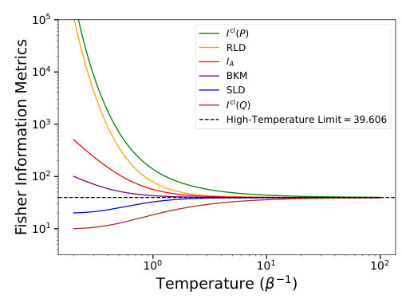
<figcaption class="paper-figure-caption"><b>Fig 2.</b> FIG. 2. Hierarchy of information metrics and a finite infinite-temperature limit. As an example, we consider a thermal state of a translationally invariant harmonic chain of N quantum harmonic oscillators in a 1D lattice with periodic boundary conditions and nearest-neighbor interactions as de- scribed by Eq. (163) with N = 10 and coupling κ = 5 · 10−3</figcaption>
</figure>
<figure class="paper-figure-card">

<figcaption class="paper-figure-caption"><b>Fig 3.</b> FIG. 3. Extremal QFI metrics of a single harmonic oscillator for polynomial signals. We plot, as a function of temperature β−1, the minimal (SLD) and maximal (RLD) QFI metrics FAk, PAk for a thermal state of the harmonic oscillator with H = (X2 + P 2)/2 and a signal generated by Ak = ckXk for k = 1, · · · , 5. The normalization factors ck are chosen such that, for every k, the SLD at zero temperature, which is four times the variance of Ak in the ground state, is equal to 1 (see Sec. G for details). In the limit of high temper- ature, the difference between PAk(ρβ) and FAk(ρβ) vanishes for k ≤3, tends to a positive constant for k = 4, and diverges for k ≥5. The slope of the curves for both...</figcaption>
</figure>
<figure class="paper-figure-card">
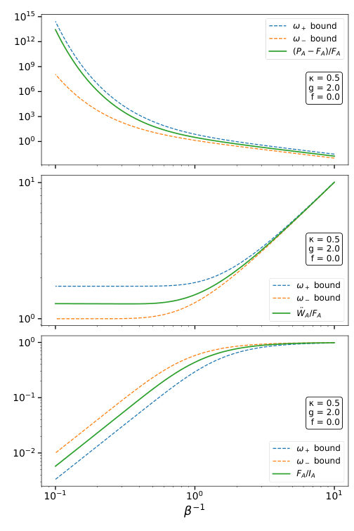
<figcaption class="paper-figure-caption"><b>Fig 4.</b> FIG. 4. Bounds on ratios of QFI metrics. We plot the bounds from Eqs. (67), (68) and (70) in the top, middle, and bottom panels respectively as functions of temperature for the harmonic chain described in Eq. (163) with N = 10 and cou- pling coefficient κ = 0.5 and a uniform signal Eq. (153). For g = 2.0 and f = 0, the signal A = P</figcaption>
</figure>
<figure class="paper-figure-card">

<figcaption class="paper-figure-caption"><b>Fig 5.</b> FIG. 5. Difference between linear and quadratic sig- nals. We depict phase-space representations of the Gibbs state ρβ and its evolved state e−iAsρβeiAs, for a fixed small value of s. For the linear signal A = X (left), the evolution produces a fixed displacement in the momentum direction. In- creasing the temperature broadens the thermal distribution, with its variance scaling as nβ + 1/2, while the displacement remains fixed. Consequently, the displacement becomes negli- gible relative to the width of the distribution, explaining why the QFI vanishes in the infinite-temperature limit. For the quadratic signal A = X2 (right), the evolution produces a squeezing deformation in phase space....</figcaption>
</figure>
</div>

<p><strong>Summary.</strong> This paper develops a general theoretical framework connecting quantum sensing sensitivity (measured by various QFI metrics) to the work done by a signal in thermal quantum states. It derives that at high temperatures, these metrics converge to a universal quantity related to the signal's fluctuation variance. This provides crucial, quantitative bounds for improving quantum measurements in the presence of thermal noise.</p>
<p><strong>Why it may be interesting.</strong> This work provides deep theoretical connections between quantum metrology (QFI) and quantum thermodynamics (work), offering quantitative bounds on sensing precision under realistic thermal conditions, which is crucial for experimental quantum sensing platforms like trapped ions.</p>
<details>
<summary>Detailed structure</summary>
<p><strong>Main problem.</strong> The paper addresses how thermal fluctuations modify quantum-enhanced sensing and establishes general relationships between the work done by a signal and the information acquired by a sensor in quantum thermodynamics.</p>
<p><strong>Main result.</strong> In the high-temperature limit, various Quantum Fisher Information (QFI) metrics coincide to a universal quantity related to the variance of the signal generator. For quadratic Gaussian signals, the infinite-temperature QFI is at least twice the zero-temperature SLD QFI.</p>
<p><strong>Method.</strong> The authors establish general theoretical relations between different QFI metrics (SLD, BKM, RLD, $I_A$) and the work done, analyzing these relationships across different temperature regimes.</p>
<p><strong>Model / system.</strong> The analysis uses the Gibbs state $
ho_eta = e^{-eta H}/Z_eta$ for the probe, which is probed by a unitary signal $U(s) = e^{-iAs}$. Specific models include harmonic chains of bosonic modes relevant to trapped-ion platforms and continuous-variable systems.</p>
<p><strong>Key observables.</strong> Quantum Fisher Information metrics (SLD, BKM, RLD, $I_A$), induced work $W(s)$, and the variance of the signal generator $  ext{Var}<em>{
ho</em>eta}(\dot{A})$.</p>
<p><strong>Important parameters / regimes.</strong> Temperature ($T$ or $eta$), signal generator $A$, and the intrinsic Hamiltonian $H$. The high-temperature limit ($eta 	o 0^+$) is a key focus.</p>
<p><strong>Assumptions / limitations.</strong> The probe is assumed to be prepared in the Gibbs state $
ho_eta$. The analysis relies on relating QFI metrics to the second derivative of the work done.</p>
<p><strong>Figures summary.</strong> Figures illustrate the sensing protocol and plot various QFI metrics (SLD, BKM, RLD, $I_A$) as functions of temperature, demonstrating their hierarchy and high-temperature convergence.</p>
<p><strong>Paper structure.</strong> The paper first establishes the general framework relating QFI metrics to work in thermal quantum sensing. It then analyzes the high-temperature limit, deriving the universal quantity $I_A(
ho_eta)$, and applies these findings to specific bosonic and harmonic chain models.</p>
</details>
<details>
<summary>Abstract</summary>
<p>Understanding how thermal fluctuations modify or suppress quantum-enhanced sensing is a central problem in quantum metrology. Closely related questions arise in quantum thermodynamics, particularly regarding the relation between the work induced by a signal and the information acquired by a sensor. Here, we establish general relations among the sensitivity of thermal quantum states, as quantified by different quantum Fisher information metrics, their temperature dependence, and the work induced by a unitary signal. We further show that, at high temperature, all monotone QFI metrics coincide to leading order with a universal quantity that can be expressed as the variance of a simple observable and itself defines a lesser-known QFI metric. This emergent uniqueness is reminiscent of the uniqueness of classical Fisher information in information geometry. In continuous-variable systems, the infinite-temperature limit is finite and generically non-zero for quadratic Gaussian signals, while it diverges for higher-degree signals. Remarkably, for any purely quadratic signal generator, the infinite-temperature QFI is at least twice the zero-temperature SLD QFI or, equivalently, at least eight times the ground-state variance of the generator. Consequently, the Cramér--Rao lower bound on the estimator variance is reduced by at least a factor of two. We illustrate these results using harmonic chains of bosonic modes relevant to trapped-ion platforms and quantum field-theoretic models.</p>
</details>
<p><sub><a href="#top">↑ back to top</a></sub></p>

<p><a id="paper-2609.09289"></a></p>
<h3 id="finite-temperature-flat-band-ferromagnetism-in-the-kagome-hubbard-model"><a href="http://arxiv.org/abs/2609.09289v1">Finite-Temperature Flat-Band Ferromagnetism in the Kagome Hubbard Model</a></h3>
<p><strong>Authors:</strong> Alon Strugatsky, Roser Valení, Jonas B. Profe<br>
<strong>Type:</strong> theory · <strong>Category:</strong> strongly correlated electrons · <strong>PDF:</strong> <a href="https://arxiv.org/pdf/2609.09289v1">https://arxiv.org/pdf/2609.09289v1</a><br>
<strong>Analysis basis:</strong> full PDF text, analyzed in chunks
<strong>Topic relevance:</strong> <code>Keldysh / 2PI / non-Gaussian methods</code> <strong>2/5</strong> · <code>analog quantum simulation</code> <strong>1/5</strong></p>
<div class="figure-strip-hint">↔ Scroll figures horizontally</div>
<div class="paper-figures-scroll">
<figure class="paper-figure-card">

<figcaption class="paper-figure-caption"><b>Fig 1.</b> Figure 1. (a) The kagome lattice in reciprocal and real space with a single unit cell highlighted by blue shading. (b) The non-interacting bandstructure and density of states. (c) Mean- field spin-split band structure at nF B = 1/8 into a majority spin band (light green) and a minority spin band (dark green), with the Fermi level crossing the van-Hove singularity of the minority spin band.</figcaption>
</figure>
<figure class="paper-figure-card">

<figcaption class="paper-figure-caption"><b>Fig 2.</b> Figure 2. Single-site DMFT results. (a) Evolution of the normalized impurity magnetization as a function of the flat-band filling nF B for different interaction strengths, indicated by the curve colors, at T/t = 0.02. The four regimes discussed in the text are indicated above the plot: from left to right, the paramagnetic (purple), onset magnetization (magenta), dispersive demagnetization (orange), and flat-band (FB) demagnetization (dark yellow) regimes. (b) Temperature dependence of the normalized magnetization at U/t = 10 in the four regimes. Saturation is reached only at T →0, indicating strong competition between the ferromagnetic order and thermal fluctuations. For larger fillings the...</figcaption>
</figure>
<figure class="paper-figure-card">
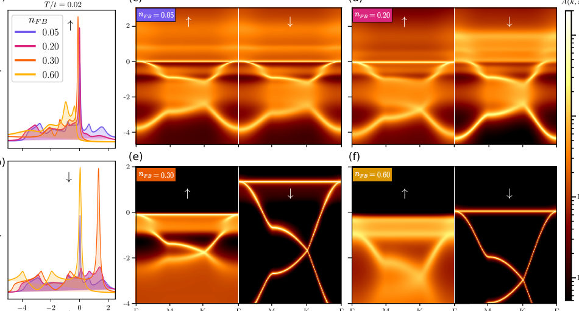
<figcaption class="paper-figure-caption"><b>Fig 3.</b> Figure 3. Spin-resolved local density of states (DOS) for the majority (a) and minority (b) spin channels, together with the momentum-resolved spectral functions (c)-(f) obtained from DMFT. The Fermi level is set to EF = 0. In the onset regime, the minority-spin channel exhibits a strong loss of quasiparticle weight near the Fermi level (Fig. 3(d)). In contrast, in the saturated regime, the minority-spin quasiparticles remain fully coherent ((e,f)).</figcaption>
</figure>
</div>

<p><strong>Summary.</strong> This work investigates correlated magnetism in Kagome metals using the single-orbital Kagome-Hubbard model within the framework of Dynamical Mean-Field Theory. The authors demonstrate strong evidence for flat-band ferromagnetism and identify an unconventional quasi-ordered state. This state is marked by persistent local spin fluctuations down to zero temperature, which they attribute to the inherent degeneracy of the flat band.</p>
<p><strong>Why it may be interesting.</strong> The concept of persistent, anomalous spin fluctuations arising purely from the degeneracy of a flat band provides a novel mechanism for magnetic instability that could be relevant to understanding strongly correlated quantum materials.</p>
<details>
<summary>Detailed structure</summary>
<p><strong>Main problem.</strong> The paper aims to elucidate the microscopic origin of correlated electronic phases in Kagome metals, specifically focusing on the physics within the flat-band regime.</p>
<p><strong>Main result.</strong> The study finds strong signatures of flat-band ferromagnetism and uncovers an unconventional quasi-ordered phase characterized by persistent local spin fluctuations down to zero temperature.</p>
<p><strong>Method.</strong> The primary theoretical tool used is Dynamical Mean-Field Theory (DMFT), which maps the lattice problem to a quantum impurity problem solved using advanced techniques like CT-HYB QMC and ED.</p>
<p><strong>Model / system.</strong> The system studied is the single-orbital Kagome-Hubbard model, described by a Hamiltonian incorporating hopping and on-site Coulomb repulsion (U). The focus is on partial fillings of the flat band.</p>
<p><strong>Key observables.</strong> Normalized magnetization ($    ilde{m}<em ext_conn="ext{conn">z$), local spin susceptibility ($\chi</em>(T)$).}}^{    ext{loc}}$), and the temperature dependence of magnetization ($    ilde{m</p>
<p><strong>Important parameters / regimes.</strong> The analysis hinges on the filling factor ($n_{FB}$) and the ratio of interaction strength to hopping ($U/t$).</p>
<p><strong>Assumptions / limitations.</strong> DMFT assumes the effective impurity bath is determined solely by the local non-interacting DOS, simplifying the cluster problem by retaining only diagonal contributions to the self-energy.</p>
<p><strong>Figures summary.</strong> Figures illustrate the Kagome lattice structure and band structure, showing the onset and flat-band demagnetization regimes. They also plot the temperature dependence of magnetization and the local spin susceptibility ($\chi_{	ext{conn}}^{	ext{loc}}$) across different magnetic regimes.</p>
<p><strong>Paper structure.</strong> The paper develops the analysis by first establishing the model and methods (DMFT), then analyzing the magnetization and temperature dependence across different filling regimes, and finally investigating the persistent spin fluctuations via the local spin susceptibility.</p>
</details>
<details>
<summary>Abstract</summary>
<p>Kagome metals exhibit a rich interplay of topology, electronic correlations, and lattice dynamics. Recent discoveries of Kagome materials with a flat band near the Fermi level have revealed a variety of correlated electronic phases. However, elucidating their microscopic origin remains challenging, as realistic descriptions require accounting for multiple orbitals and competing interactions on an equal footing. To disentangle correlation effects from material-specific details and identify the essential physics of the flat-band regime, we study the single-orbital Kagome-Hubbard model at flat-band fillings using dynamical mean-field theory. We find strong signatures of flat-band ferromagnetism, consistent with exact and mean-field ground-state results. Moreover, we uncover an unconventional quasi-ordered phase in which a partially filled spin-polarized flat band pinned at the Fermi level gives rise to persistent local spin fluctuations down to zero temperature, in striking contrast to the classical behavior expected for a conventional ferromagnet. Our results demonstrate that these anomalous fluctuations are an intrinsic consequence of the flat-band degeneracy and establish a minimal framework for understanding correlation effects in flat-band Kagome systems.</p>
</details>
<p><sub><a href="#top">↑ back to top</a></sub></p>

<p><a id="paper-2609.10535"></a></p>
<h3 id="for-whom-does-bell-hold"><a href="http://arxiv.org/abs/2609.10535v1">For Whom Does Bell Hold?</a></h3>
<p><strong>Authors:</strong> Daniel Green, Kshitij Gupta, Qiya Zhang<br>
<strong>Type:</strong> theory · <strong>Category:</strong> other · <strong>PDF:</strong> <a href="https://arxiv.org/pdf/2609.10535v1">https://arxiv.org/pdf/2609.10535v1</a><br>
<strong>Analysis basis:</strong> full PDF text, analyzed in chunks
<strong>Topic relevance:</strong> <code>Keldysh / 2PI / non-Gaussian methods</code> <strong>2/5</strong> · <code>analog quantum simulation</code> <strong>1/5</strong></p>
<div class="figure-strip-hint">↔ Scroll figures horizontally</div>
<div class="paper-figures-scroll">
<figure class="paper-figure-card">
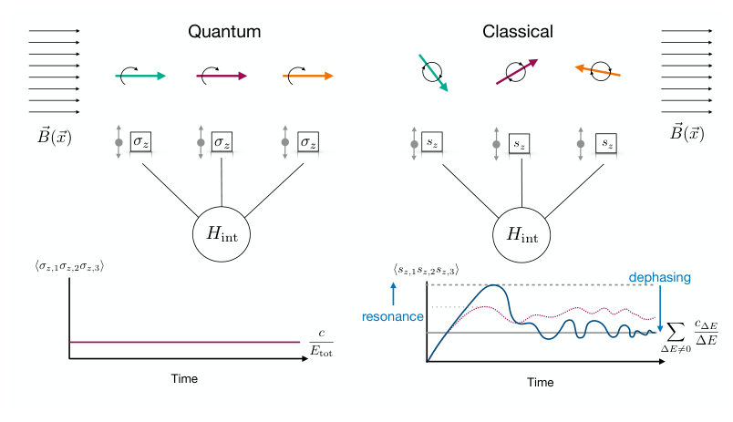
<figcaption class="paper-figure-caption"><b>Fig 1.</b> Figure 1: Illustration of the structural differences between quantum and classical theories. Both the quantum and classical theories have spins placed in the magnetic fields that cause spins to precess. The quantum theory (left) is placed in the ground state. The measurement of the spin in z-direction is random. When the spins are coupled via a Hamiltonian Hint, the resulting correlations are time-independent with an amplitude set by the total energy Etot = E1 +E2 +E3, where the energies Ei are the gaps between the ground state and excited state of each spin. For the classical theory (right) to produce random spins in the z direction, the spins are precessing in time with a frequency Ei and...</figcaption>
</figure>
</div>

<p><strong>Summary.</strong> This paper proposes a generalized Bell-type test that uses the pattern of statistical correlations in time evolution to distinguish quantum from classical physics. It shows that quantum vacuum fluctuations yield unique, stable correlations governed by energy gaps, unlike classical systems whose correlations exhibit resonant behavior followed by dephasing. This offers a new theoretical avenue to detect quantum effects in macroscopic, seemingly classical settings.</p>
<p><strong>Why it may be interesting.</strong> This work provides a powerful, general diagnostic tool—analyzing time-dependent correlations—to probe the quantum nature of time evolution itself, which is highly relevant for open quantum systems and quantum gravity phenomenology.</p>
<details>
<summary>Detailed structure</summary>
<p><strong>Main problem.</strong> The paper aims to generalize the use of statistical correlations as a Bell-type test to distinguish between fundamentally quantum and classical time evolution, especially in macroscopic settings where standard Bell tests fail.</p>
<p><strong>Main result.</strong> Quantum vacuum fluctuations produce unique statistical correlations that are time-independent and controlled by energy gaps, which are distinct from the resonant, dephasing-dominated correlations exhibited by classical Hamiltonian systems.</p>
<p><strong>Method.</strong> The authors analyze the statistical correlations of observables in closed systems undergoing Hamiltonian evolution, comparing the predictions of quantum field theory vacuum fluctuations against those of classical Hamiltonian dynamics.</p>
<p><strong>Model / system.</strong> The comparison is made between quantum and classical systems undergoing Hamiltonian evolution, using spin-like observables as an illustration. The focus is on the vacuum state correlations in closed quantum systems.</p>
<p><strong>Key observables.</strong> Statistical correlations of observables, energy gap ($\Delta E$), and the presence/absence of apparent poles in correlators.</p>
<p><strong>Important parameters / regimes.</strong> The energy gap ($\Delta E$) between the ground and excited states, and the time scale over which dephasing occurs.</p>
<p><strong>Assumptions / limitations.</strong> The analysis assumes the system is closed and undergoing Hamiltonian evolution, and it seeks to generalize the concept of non-classicality beyond standard Bell tests.</p>
<p><strong>Figures summary.</strong> Figure 1 illustrates the structural differences in correlations between quantum (time-independent, gap-controlled) and classical (precession-based, resonant/decaying) theories involving spins in magnetic fields.</p>
<p><strong>Paper structure.</strong> The paper progresses by first establishing the failure of standard Bell tests in certain physical regimes (like cosmology), then generalizing the test to time evolution itself, and finally contrasting the unique, time-independent correlations of the quantum vacuum against the resonant, dephasing behavior of classical systems.</p>
</details>
<details>
<summary>Abstract</summary>
<p>Violations of Bell's inequalities offer a definitive signal of non-classical (quantum) behavior in local deterministic systems. Yet, in many physical settings where quantum mechanics is expected to play an important role, one cannot construct a Bell-type test using the available observables. Cosmology offers one concrete example, where cosmic structure may have originated from quantum vacuum fluctuations yet all observations are effectively classical. Nevertheless, recent work suggests that quantum and classical time evolution may still be differentiated by the pattern of statistical correlations of these observables. In this paper, we explore and generalize the use of correlations as Bell-type test of the nature of time evolution. We show that quantum vacuum fluctuations of closed systems undergoing Hamiltonian evolution produce unique correlations that are not mimicked by classical Hamiltonian systems. Correlations in the quantum vacuum are generally time-independent and are controlled by the energy gap between the ground and exited states. Classical systems exhibit apparent poles at physical frequencies that do not arise in the quantum vacuum. As one approaches the poles, the evolution becomes dominated by a resonant Hamiltonian giving rise to time dependent correlations that eventually decay through dephasing. Finally, we show that this behavior is distinct from other signals of quantum evolution, including applications to quantum optics, quantum walks, and quantum search.</p>
</details>
<p><sub><a href="#top">↑ back to top</a></sub></p>

<p><a id="paper-2609.09268"></a></p>
<h3 id="reconstructing-fluid-velocity-fields-from-sparse-sensors-using-a-variational-quantum-algorithm"><a href="http://arxiv.org/abs/2609.09268v1">Reconstructing fluid velocity fields from sparse sensors using a variational quantum algorithm</a></h3>
<p><strong>Authors:</strong> Nhat-Quang Nguyen, Mohammad Mehedi Hasan Akash, Kourosh Shoele, Yanzhu Chen, Huixuan Wu<br>
<strong>Type:</strong> theory · <strong>Category:</strong> quantum information and computing · <strong>PDF:</strong> <a href="https://arxiv.org/pdf/2609.09268v1">https://arxiv.org/pdf/2609.09268v1</a><br>
<strong>Analysis basis:</strong> full PDF text, analyzed in chunks
<strong>Topic relevance:</strong> <code>quantum measurements</code> <strong>2/5</strong> · <code>Keldysh / 2PI / non-Gaussian methods</code> <strong>1/5</strong></p>
<div class="figure-strip-hint">↔ Scroll figures horizontally</div>
<div class="paper-figures-scroll">
<figure class="paper-figure-card">

<figcaption class="paper-figure-caption"><b>Fig 1.</b> FIG. 1: The hardware-efficient ansatz with repeated layers of entangling unit circuits B arranged in a brickwall pattern. Repeating the unit circuit B more times increases the expressivity of the ansatz. All the Ry gates in the circuit are defined by parameters independent of each other. One dashed brown box is a brickwall layer.</figcaption>
</figure>
<figure class="paper-figure-card">
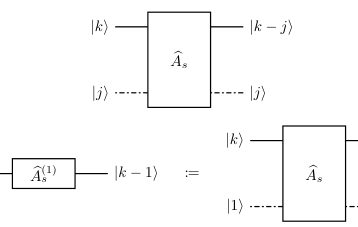
<figcaption class="paper-figure-caption"><b>Fig 2.</b> FIG. 2: The circuit in the top panel illustrates the effect of the index-shifting operator ˆAs. The state index of the top register is to be shifted and the bottom register with the dash-dotted wire encodes the value of the shift. For convenience, we define another operator ˆA(1) s , which is shifting the index by 1, as shown in the bottom panel.</figcaption>
</figure>
<figure class="paper-figure-card">
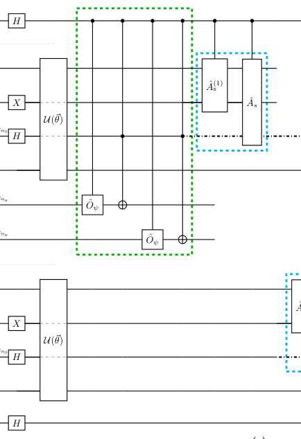
<figcaption class="paper-figure-caption"><b>Fig 3.</b> FIG. 4: (a) Circuit for evaluating a representative term in Eq. (15), P</figcaption>
</figure>
<figure class="paper-figure-card">

<figcaption class="paper-figure-caption"><b>Fig 4.</b> FIG. 7: Numerically simulated baseline and VQA-reconstructed velocity fields with higher space or temporal resolution for ν = 0.05. Each solid line connects the baseline velocities at different spatial coordinates for a given time. Unfilled circles are the velocities reconstructed by the proposed VQA. Panels (a) and (b) show the results for the Burgers equation with the sinusoidal (using nt + ns = 4 + 4 qubits) and Gaussian initial wave profiles (using nt + ns = 6 + 6 qubits), respectively. Panel (c) shows the results for the KS equation with nt + ns = 5 + 3 qubits.</figcaption>
</figure>
<figure class="paper-figure-card">
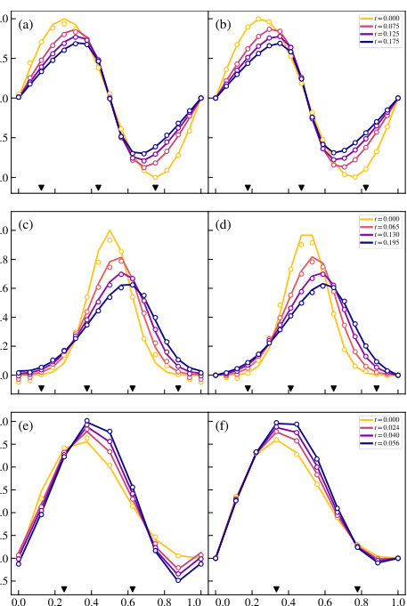
<figcaption class="paper-figure-caption"><b>Fig 5.</b> FIG. 6: Numerically simulated baseline and VQA-reconstructed velocity fields with viscosity ν = 0.05. Triangles on the x-axis indicate the sensor locations used for the reconstruction. Each solid line connects the baseline velocities at different spatial coordinates for a given time. Unfilled circles are the velocities reconstructed by the proposed VQA. Panels (a)(b) and (c)(d) show the results for the Burgers equation with the sinusoidal and Gaussian initial wave profiles, respectively. Panels (e) and (f) show the results for the KS equation. Panels (a), (c), and (e) are results from the real-space approach and Panels (b), (d), and (f) are results from the Galerkin-reduced-basis approach.</figcaption>
</figure>
</div>

<p><strong>Summary.</strong> This paper introduces a variational quantum algorithm to reconstruct fluid velocity fields from sparse sensor data by encoding the entire spacetime solution into a single quantum state. It minimizes a cost function that simultaneously enforces the governing nonlinear PDE and matches sparse measurements. The method shows promise for quantum-enhanced solutions to complex, time-dependent physical inverse problems.</p>
<p><strong>Why it may be interesting.</strong> This work directly applies quantum computation to solve a complex, continuous, non-equilibrium physics problem (PDEs), offering a quantum-enhanced approach to inverse problems in fluid dynamics.</p>
<details>
<summary>Detailed structure</summary>
<p><strong>Main problem.</strong> The core challenge is reconstructing continuous physical fields governed by nonlinear Partial Differential Equations (PDEs) when measurements are available only at sparse locations.</p>
<p><strong>Main result.</strong> The authors demonstrate that a variational quantum algorithm employing a spacetime-encoding scheme can successfully reconstruct globally consistent spacetime fields from sparse observations with low Root-Mean-Square (RMS) error.</p>
<p><strong>Method.</strong> They propose a VQA framework where the entire discrete spacetime solution is encoded into a single quantum state, optimizing all time points jointly by minimizing a cost function combining PDE violation and measurement mismatch.</p>
<p><strong>Model / system.</strong> The method is applied to fluid velocity fields, specifically modeling the one-dimensional Burgers and Kuramoto-Sivashinsky (KS) equations under periodic boundary conditions.</p>
<p><strong>Key observables.</strong> Root-Mean-Square (RMS) error quantifying reconstruction accuracy; the reconstructed velocity field u(t, x).</p>
<p><strong>Important parameters / regimes.</strong> Viscosity parameter ($\nu$); time and space discretization steps ($\Delta t, \Delta x$); the weighting hyperparameter ($w$) balancing PDE and measurement constraints.</p>
<p><strong>Assumptions / limitations.</strong> The solution must admit a sparse representation within the Hilbert space accessible by the chosen quantum ansatz; the real-space approach uses first-order finite-difference approximations for derivatives.</p>
<p><strong>Figures summary.</strong> Figures show reconstructed velocity fields for the Burgers and KS equations under varying resolutions, and a comparison of final-time wave profiles for both equations.</p>
<p><strong>Paper structure.</strong> The paper progresses from the general inverse problem challenge to proposing the VQA framework. It details two implementation strategies (real-space vs. Galerkin-reduced-basis) for encoding the physics constraint into the quantum cost function, culminating in numerical simulations and results.</p>
</details>
<details>
<summary>Abstract</summary>
<p>Reconstructing fields governed by nonlinear partial differential equations (PDEs) from sparse measurements is a challenging task because the governing equations are strongly nonlinear and observations are available at only a few locations. Fluid velocity fields are a representative case. In this paper, we propose a variational quantum algorithm that reconstructs the solution over the entire spacetime domain at once. Rather than marching in time, the method encodes the full discrete spacetime solution in a single variational quantum state, so that all time points are optimized jointly. The cost function combines a sparse-measurement mismatch term with a physics-informed PDE violation term, letting data and the governing equation constrain the solution simultaneously. We demonstrate the method on the one-dimensional Burgers and Kuramoto--Sivashinsky equations using numerical simulations. The results suggest that variational quantum algorithms with a spacetime encoding scheme offer a compact framework for reconstructing nonlinear PDE dynamics.</p>
</details>
<p><sub><a href="#top">↑ back to top</a></sub></p>

<p><a id="paper-2609.10163"></a></p>
<h3 id="anizotropic-ising-model-on-2d-kagome-lattice-as-an-inhomogeneous-xyz-integrable-model"><a href="http://arxiv.org/abs/2609.10163v1">Anizotropic Ising Model on 2D Kagomé Lattice as an Inhomogeneous XYZ Integrable Model</a></h3>
<p><strong>Authors:</strong> Shahane A. Khachatryan, Hrachya Babujian, Ara G. Sedrakyan<br>
<strong>Type:</strong> theory · <strong>Category:</strong> statistical mechanics · <strong>PDF:</strong> <a href="https://arxiv.org/pdf/2609.10163v1">https://arxiv.org/pdf/2609.10163v1</a><br>
<strong>Analysis basis:</strong> full PDF text, analyzed in chunks
<strong>Topic relevance:</strong> <code>analog quantum simulation</code> <strong>2/5</strong></p>
<div class="figure-strip-hint">↔ Scroll figures horizontally</div>
<div class="paper-figures-scroll">
<figure class="paper-figure-card">

<figcaption class="paper-figure-caption"><b>Fig 1.</b> Figure 2: Critical subsurfaces on the real coordinate space J1, J2, J3</figcaption>
</figure>
</div>

<p><strong>Summary.</strong> This paper analyzes an inhomogeneous Ising model on the Kagomé lattice by mapping it onto an integrable eight-vertex R-matrix formulation. By analyzing specific coupling limits, the authors derive corresponding one-dimensional quantum spin chain Hamiltonians. The work successfully calculates thermodynamic properties like the specific heat, providing deep insights into the critical behavior of this complex lattice system.</p>
<p><strong>Why it may be interesting.</strong> The rigorous connection between a 2D lattice model (Ising on Kagomé) and integrable 1D quantum spin chains via the Yang-Baxter equation is highly relevant for understanding quantum critical points and exactly solvable models in condensed matter theory.</p>
<details>
<summary>Detailed structure</summary>
<p><strong>Main problem.</strong> The study investigates the integrable structure and thermodynamic properties of a generalized inhomogeneous Ising model defined on the two-dimensional Kagomé lattice.</p>
<p><strong>Main result.</strong> The analysis successfully derives the free energy and specific heat for partially anisotropic cases, yielding specific quantum spin chain Hamiltonians for two distinct coupling regimes ($J'_i = J_i$ and $J'_i = -J_i$).</p>
<p><strong>Method.</strong> The primary methods involve mapping local Boltzmann weights to a non-symmetric eight-vertex R-matrix, verifying the free-fermion condition, and analyzing the Yang-Baxter structure in the anisotropic limit.</p>
<p><strong>Model / system.</strong> The system is an inhomogeneous Ising model on the Kagomé lattice, characterized by alternating nearest-neighbor couplings ($J_i$ and $J'_i$) along its three lattice directions. The partition function is derived from these couplings.</p>
<p><strong>Key observables.</strong> Free energy, specific heat, and the resulting one-dimensional quantum spin Hamiltonians.</p>
<p><strong>Important parameters / regimes.</strong> The coupling constants $J_i$ and $J'_i$, and the anisotropic limit parameters.</p>
<p><strong>Assumptions / limitations.</strong> The analysis assumes nearest-neighbor interactions and often proceeds by taking the anisotropic or continuum limit to reduce the problem to 1D quantum chains.</p>
<p><strong>Figures summary.</strong> Figure 1 illustrates the Kagomé lattice structure; Figure 2 shows the critical subsurfaces in the parameter space ($J_1, J_2, J_3$) for the two analyzed coupling regimes.</p>
<p><strong>Paper structure.</strong> The paper first establishes the general partition function and its connection to the eight-vertex model via the R-matrix. It then analyzes specific coupling limits ($J'_i = \pm J_i$) to derive 1D quantum models and finally calculates thermodynamic quantities like free energy and specific heat for partially anisotropic cases.</p>
</details>
<details>
<summary>Abstract</summary>
<p>We investigate a generalized inhomogeneous two-dimensional Ising model on the kagomé lattice with two alternating couplings $J_i$ and $J'_i$, $i=1,2,3$, along the three lattice directions. The local Boltzmann weights are mapped onto a non-symmetric eight-vertex $R$-matrix satisfying the free-fermion condition for arbitrary values of the six couplings. We analyze the Yang--Baxter structure for the cases $J'_i=J_i$ and $J'_i=-J_i$ and derive the corresponding one-dimensional quantum spin chains in the anisotropic limit. The first case yields a transverse-field Ising-type Hamiltonian, while the second leads to a modified chain with a graded permutation structure and shifted partition-function zeros. For a partially anisotropic model, we also obtain the free energy and specific heat.</p>
</details>
<p><sub><a href="#top">↑ back to top</a></sub></p>

<p><a id="paper-2609.09383"></a></p>
<h3 id="emergent-electronic-bond-order-wave-in-a-quasi-one-dimensional-chain"><a href="http://arxiv.org/abs/2609.09383v1">Emergent Electronic Bond-Order Wave in a Quasi-One-Dimensional Chain</a></h3>
<p><strong>Authors:</strong> Honghao Wang, Tristan R. Cao, Pedro Schlottmann, Gang Cao<br>
<strong>Type:</strong> both · <strong>Category:</strong> strongly correlated electrons · <strong>PDF:</strong> <a href="https://arxiv.org/pdf/2609.09383v1">https://arxiv.org/pdf/2609.09383v1</a><br>
<strong>Analysis basis:</strong> full PDF text, analyzed in chunks
<strong>Topic relevance:</strong> <code>Frenkel-Kontorova</code> <strong>2/5</strong></p>
<div class="figure-strip-hint">↔ Scroll figures horizontally</div>
<div class="paper-figures-scroll">
<figure class="paper-figure-card">

<figcaption class="paper-figure-caption"><b>Fig 1.</b> Figure 1</figcaption>
</figure>
<figure class="paper-figure-card">
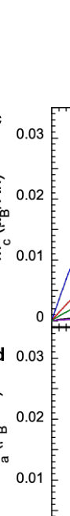
<figcaption class="paper-figure-caption"><b>Fig 2.</b> Figure 2</figcaption>
</figure>
<figure class="paper-figure-card">
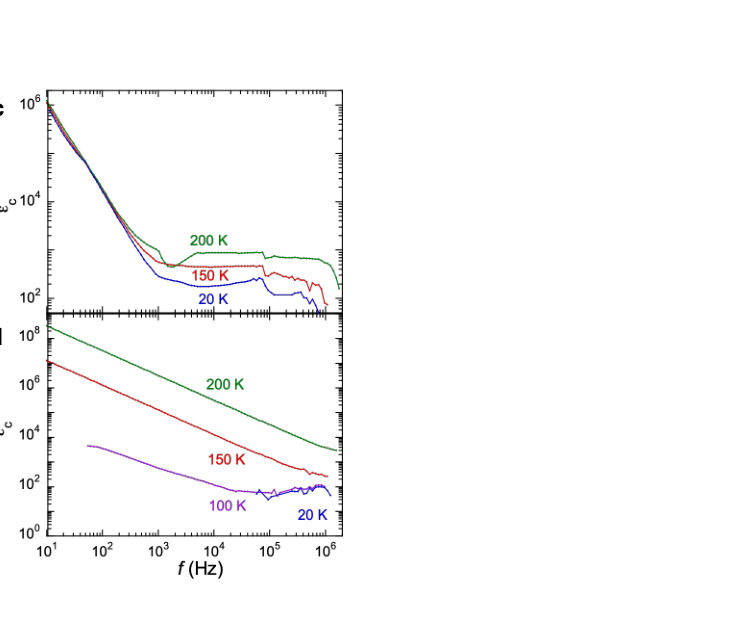
<figcaption class="paper-figure-caption"><b>Fig 3.</b> Figure 3</figcaption>
</figure>
<figure class="paper-figure-card">
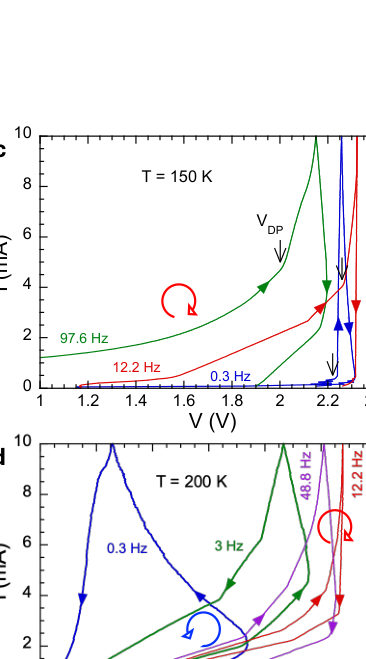
<figcaption class="paper-figure-caption"><b>Fig 4.</b> Figure 4</figcaption>
</figure>
<figure class="paper-figure-card">
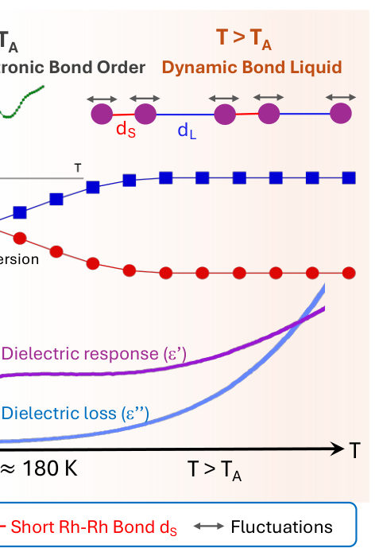
<figcaption class="paper-figure-caption"><b>Fig 5.</b> Figure 5</figcaption>
</figure>
</div>

<p><strong>Summary.</strong> This paper reports the discovery of an electronic Bond-Order Wave (BOW) in the quasi-1D material $ ext{Ba}<em 24>9   ext{Rh}_8   ext{O}</em>$ below a critical temperature $T_A$. The transition is marked by a structural bond inversion, which stabilizes a rigid electronic order, evidenced by correlated anomalies in dielectric and non-linear transport measurements. This establishes bond-centered order as a novel organizing principle for correlated quantum matter.</p>
<p><strong>Why it may be interesting.</strong> The work provides an experimental realization of bond-centered electronic order, offering a platform to study correlated electron physics in low dimensions where conventional CDW or magnetic ordering might fail.</p>
<details>
<summary>Detailed structure</summary>
<p><strong>Main problem.</strong> The primary challenge addressed is stabilizing collective electronic order in one dimension, a regime prone to fluctuations that suppress symmetry-breaking states.</p>
<p><strong>Main result.</strong> The authors report the emergence of a Bond-Order Wave (BOW) in $   ext{Ba}<em 24>9   ext{Rh}_8   ext{O}</em>$, characterized by a structural bond inversion at $T_A \approx 180 	ext{ K}$ and confirmed by correlated anomalies in dielectric and transport measurements.</p>
<p><strong>Method.</strong> The study combines single-crystal X-ray diffraction to track structural bond changes with multiple electrical and thermodynamic measurements (dielectric response, heat capacity, I-V curves) to diagnose the electronic state transition.</p>
<p><strong>Model / system.</strong> The physical system is the quasi-one-dimensional material $ ext{Ba}<em 24>9   ext{Rh}_8   ext{O}</em>$, whose electronic behavior is modeled by considering bond-centered electronic order, which overcomes 1D fluctuations.</p>
<p><strong>Key observables.</strong> Bond inversion (short $\leftrightarrow$ long Rh-Rh bonds), heat-capacity anomaly, suppression of dielectric loss ($\epsilon''$), and nonlinear/memristive I-V hysteresis.</p>
<p><strong>Important parameters / regimes.</strong> Transition temperature $T_A \approx 180 	ext{ K}$; the system transitions from a dynamic bond liquid to a rigid BOW state.</p>
<p><strong>Assumptions / limitations.</strong> The observed electrical behavior is attributed to an intrinsic collective reorganization of the bond network, rather than purely thermal effects.</p>
<p><strong>Figures summary.</strong> Figures illustrate the bond inversion via X-ray diffraction, the coincidence of anomalies in heat capacity and dielectric response near $T_A$, and the development of nonvolatile memristive switching below $T_A$.</p>
<p><strong>Paper structure.</strong> The paper systematically links structural evidence (bond inversion) with thermodynamic (heat capacity) and electronic transport signatures (dielectric/I-V) to establish a unified picture of the transition into a rigid BOW state.</p>
</details>
<details>
<summary>Abstract</summary>
<p>Collective order is notoriously difficult to stabilize in one dimension, where strong fluctuations suppress symmetry-breaking states. Here we report the emergence of an electronic bond-order wave (BOW) in the quasi-one-dimensional (1D) material Ba9Rh8O24, in which structural bonds become active electronic degrees of freedom that overcome 1D fluctuations to establish long-range order. Single-crystal X-ray diffraction uncovers a striking inversion of inequivalent Rh-Rh bonds across a transition TA = 180 K, where short and long bonds interchange their identities rather than undergoing conventional Peierls dimerization. This bond inversion coincides with a heat-capacity anomaly and a profound reorganization of the dielectric response with strong suppression of dielectric loss upon cooling. The BOW exhibits strongly nonlinear, frequency-dependent I-V characteristics, clockwise hysteresis, and nonvolatile memristive switching. These findings uncover an unprecedented transformation from a dynamic bond liquid to a rigid yet electrically reconfigurable BOW, establishing bond-centered electronic order as a new organizing principle for 1D quantum matter.</p>
</details>
<p><sub><a href="#top">↑ back to top</a></sub></p>

<p><a id="paper-2609.09334"></a></p>
<h3 id="execution-transcript-privacy-for-fault-tolerant-surface-code-memories"><a href="http://arxiv.org/abs/2609.09334v1">Execution-transcript privacy for fault-tolerant surface-code memories</a></h3>
<p><strong>Authors:</strong> Jiachen Shen, Hui Zhong<br>
<strong>Type:</strong> both · <strong>Category:</strong> quantum information and computing · <strong>PDF:</strong> <a href="https://arxiv.org/pdf/2609.09334v1">https://arxiv.org/pdf/2609.09334v1</a><br>
<strong>Analysis basis:</strong> full PDF text, analyzed in chunks
<strong>Topic relevance:</strong> <code>quantum measurements</code> <strong>2/5</strong></p>
<div class="figure-strip-hint">↔ Scroll figures horizontally</div>
<div class="paper-figures-scroll">
<figure class="paper-figure-card">
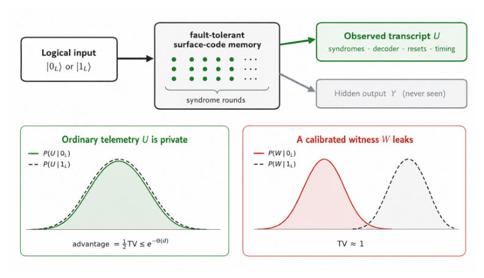
<figcaption class="paper-figure-caption"><b>Fig 1.</b> Figure 1: The transcript privacy channel and the two regimes. A logical input enters a surface-code memory that emits the non-output transcript U while the output Y stays hidden. The two input-conditioned laws of ordinary U nearly coincide (private), while a calibrated witness W separates them (leaks).</figcaption>
</figure>
<figure class="paper-figure-card">
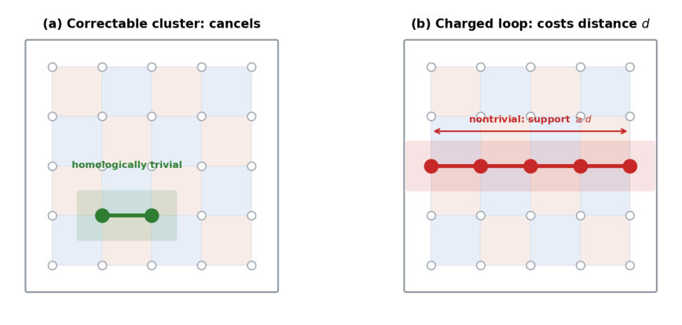
<figcaption class="paper-figure-caption"><b>Fig 2.</b> Figure 2: The mechanism. (a) By Knill–Laflamme, a bra–ket fault pair K† bKa with homo- logically trivial support multiplies the code space by a scalar within its syndrome sector and cancels in the two transcript laws. The condition is trivial homology, not weight below d (Remark 5). (b) An input-sensitive contribution must therefore carry a homologically nontrivial cycle, whose support is ≥d, so logical information enters only through a charged region of size ≥d/ℓ∗. The schematic is spatial only, and the expansion runs over spacetime detector regions.</figcaption>
</figure>
<figure class="paper-figure-card">
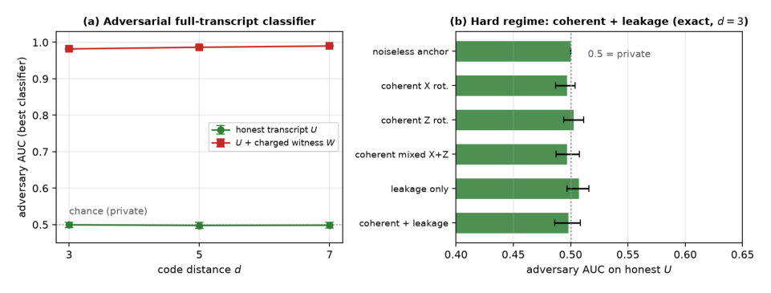
<figcaption class="paper-figure-caption"><b>Fig 3.</b> Figure 3: An adversarial null for the honest transcript (bootstrap 95% CIs; circuit-level depolarizing noise at p = 0.005, minimum-weight perfect-matching decoder, logistic adversary on the full detector record, held-out split). (a) An adversary given the full detector record stays at chance for honest U across d = 3, 5, 7 and reaches near one with a charged witness W. (b) The same adversary stays at chance under coherent and leakage noise in an exact statevector simulation at d = 3 (five noise models).</figcaption>
</figure>
<figure class="paper-figure-card">

<figcaption class="paper-figure-caption"><b>Fig 4.</b> Figure 4: The converse and the locality indicator (bootstrap 95% CIs). (a) The lattice-surgery merged-parity error pLS decays exponentially in d (MWPM decoder), so the converse bound 1 −2pLS rises toward one. (b) The empirical cluster-tail rate µfreq, fitted to the sizes of the observed fired-detector components Robs, which are not the fault-support regions Rlat the theorem is stated for. This rate also differs from the polymer activity. The Kotecký–Preiss condition ea &lt; 1 requires Krod¯η &lt; 1/(e3 deg) ≈4.1 × 10−3 at detector degree 12, a threshold drawn as the dashed line, while the measured indicator sits about 190× above it. A geometric tail with µfreq &lt; 1 supports the form PWTS assumes....</figcaption>
</figure>
<figure class="paper-figure-card">

<figcaption class="paper-figure-caption"><b>Fig 5.</b> Figure 5: Measured transcript privacy on ibm_cleveland. Filled circles are the original grouped acquisition. The filled diamonds are the randomised, label-balanced re- acquisition at n = 3, 7, 21, which is the acquisition used for the headline number. (a) Total- variation lower bound against code repetition length for the honest transcript, randomized encoding, and a deliberately planted charged record. The shaded band is the finite-sample null floor, and open markers repeat the whole sweep on a disjoint qubit set. Randomisation moves n = 21 from 0.949 to 0.927 and n = 7 from 0.880 to 0.660, and the second change provides the control that detects acquisition-order contamination without...</figcaption>
</figure>
</div>

<p><strong>Summary.</strong> This work analyzes the privacy leakage from the control logs (transcripts) of fault-tolerant quantum memories. It proves that while fault tolerance protects the final output, the execution record leaks information proportional to the code's $Z$-distance. The findings are critical for understanding the security boundaries of quantum computation hardware.</p>
<p><strong>Why it may be interesting.</strong> It provides a rigorous, quantitative measure of privacy leakage in near-term quantum hardware, which is crucial for building trustworthy quantum cloud services.</p>
<details>
<summary>Detailed structure</summary>
<p><strong>Main problem.</strong> The paper investigates whether the classical telemetry stream (syndromes, decoder actions, timing) generated during fault-tolerant quantum computation can leak information about the secret logical input state.</p>
<p><strong>Main result.</strong> Fault tolerance does not guarantee transcript privacy; the leakage is governed by the code's $Z$-distance ($d_Z$), not the overall code distance ($d_{\min}$).</p>
<p><strong>Method.</strong> The analysis uses information-theoretic tools, comparing the transcript laws for $|0_L
angle$ and $|1_L
angle$ using the total variation distance, and drawing parallels to correctability-privacy duality.</p>
<p><strong>Model / system.</strong> The model is a fault-tolerant quantum memory based on the rotated surface code, simulated over $T=\Theta(d)$ rounds and subjected to amplitude damping noise.</p>
<p><strong>Key observables.</strong> Total variation distance ($    ext{TV}$) between transcript laws, $Z$-distance ($d_Z$), and the leakage exponent ($  ext{O}(\gamma^{d_Z})$).</p>
<p><strong>Important parameters / regimes.</strong> Code distance ($d$), number of rounds ($T$), amplitude damping probability ($\gamma$), and the specific code type (e.g., repetition code).</p>
<p><strong>Assumptions / limitations.</strong> The theoretical analysis relies on hypotheses like sector-scalar honest backbone and transcript locality, though experimental results show discrepancies with current hardware.</p>
<p><strong>Figures summary.</strong> Figure 1 illustrates the privacy channel, contrasting the observed transcript $U$ with the hidden output $Y$. Figure 2 illustrates the mechanism of leakage cancellation based on homological properties.</p>
<p><strong>Paper structure.</strong> The paper establishes the theoretical bound using duality, analyzes specific code types (repetition, phase-flip) to derive the leakage order $ ext{O}(\gamma^{d_Z})$, and concludes with experimental measurements on superconducting processors.</p>
</details>
<details>
<summary>Abstract</summary>
<p>A fault-tolerant quantum computer runs behind a telemetry stream logging syndromes, decoder actions, resets and timing separately from the answer. Can it reveal the logical input? For a distance-$d$ rotated surface-code memory on a fixed schedule of $T=Θ(d)$ rounds, under three stated hypotheses (sector-scalar honest backbone, transcript locality, Kotecky-Preiss smallness), the channel from logical qubit to transcript is $e^{-Θ(d)}$-close in diamond norm to one that ignores the input. A statement of this kind follows generically from correctability-privacy duality. Anisotropy does not. Each logical axis pays the distance of its own coset, so under amplitude damping the computational-basis label is governed by the code's $Z$-distance $d_Z\ge d_{\min}$ and not by the code distance. Two codes of quantum distance $1$ make the gap concrete. A phase-flip code's $X$-syndrome transcript is exactly input-independent under unobserved damping, while a repetition code leaks at first order. A matched converse identifies the records that do expose it, among them a lattice-surgery parity readout. On a 156-qubit superconducting processor our sufficient certificate misses by $21.5\times$, so the theorem cannot be invoked there. Measured directly, a $d_Z=1$ memory's record identifies its input with total variation $\ge 0.927$ under randomised, label-balanced acquisition. Holding the code fixed and varying the damping exposure reproduces the parameter-free law, with exponent $0.85\pm0.03$ against a predicted $0.86$. Randomized encoding returns the statistic to the floor at no two-qubit-gate cost. Fault tolerance does not grant transcript privacy. It relocates it, and only to the logical state, not to the circuit's identity.</p>
</details>
<p><sub><a href="#top">↑ back to top</a></sub></p>

<p><a id="paper-2609.09977"></a></p>
<h3 id="from-block-encoding-to-generalized-quantum-signal-processing-principles-algorithms-and-applications"><a href="http://arxiv.org/abs/2609.09977v1">From Block-encoding to Generalized Quantum Signal Processing: Principles, Algorithms and Applications</a></h3>
<p><strong>Authors:</strong> Tal Gurfinkel, Kaushika De Silva, Anuradha Mahasinghe, Jens Renders, Jack Blyth, James Greenwell, Archie Butterworth, Yusen Wu, Lyle Noakes, Miloud Bessafi, Frederic Cadet, Jingbo Wang<br>
<strong>Type:</strong> theory · <strong>Category:</strong> quantum information and computing · <strong>PDF:</strong> <a href="https://arxiv.org/pdf/2609.09977v1">https://arxiv.org/pdf/2609.09977v1</a><br>
<strong>Analysis basis:</strong> full PDF text, analyzed in chunks
<strong>Topic relevance:</strong> <code>analog quantum simulation</code> <strong>2/5</strong></p>
<div class="figure-strip-hint">↔ Scroll figures horizontally</div>
<div class="paper-figures-scroll">
<figure class="paper-figure-card">

<figcaption class="paper-figure-caption"><b>Fig 1.</b> Figure 1: Sparse-access block-encoding circuit for an s-sparse matrix, where m = ⌈log2 s⌉. The upper two registers form the signal register, and compression onto |0⟩|0m⟩yields the unnormalized post- selected branch corresponding to A |ψ⟩, with normalization factor 2m.</figcaption>
</figure>
<figure class="paper-figure-card">
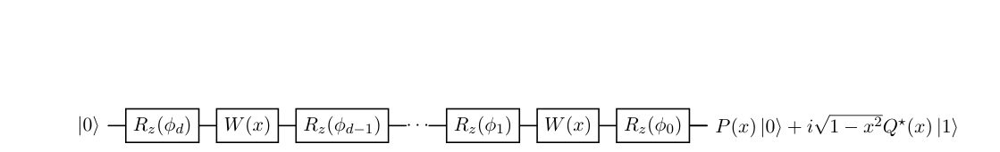
<figcaption class="paper-figure-caption"><b>Fig 2.</b> Figure 7: Degree-d QSP circuit in the W(x) convention. The circuit contains d applications of the signal unitary W(x) interleaved with d+1 phase rotations, and the |0⟩-signal amplitude of the output is P(x).</figcaption>
</figure>
<figure class="paper-figure-card">

<figcaption class="paper-figure-caption"><b>Fig 3.</b> Figure 8: Ancilla-mediated phase-kickback implementation of the QET sequence UeΦ(WH) from The- orem 2.15 [3]. The implemented angles satisfy bϕk = eϕk + π/2 for 0 ≤k &lt; d and bϕd = eϕd. Each non- terminal phase operation followed by UH realizes i eieϕkRWH. Hence, the complete circuit implements idUeΦ(WH), differing from the desired sequence only by the known global phase id. The open controls jointly condition on the block-encoding ancillae being in |0a⟩and represent signal-controlled NOT C(q) Π defined in Eq. (59), where Π = |0a⟩⟨0a|⊗I. Each pair of C(q) Π , combined with e−iϕjZ, implements the projected phase eiϕj(2Π−I), while returning the kickback qubit q coherently to |0⟩....</figcaption>
</figure>
<figure class="paper-figure-card">
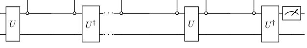
<figcaption class="paper-figure-caption"><b>Fig 4.</b> Figure 9: Explicit phase-kickback implementation of the odd- and even-degree QSVT sequences [1]. Each pair of open-controlled NOT gates is conditioned on the block-encoding ancillae being in |0⟩⊗a. Together with e−iϕjZ, the pair implements the projected phase eiϕj(2Π−I), where Π = |0a⟩⟨0a| ⊗I, while returning the kickback qubit q coherently to |0⟩. The gates U and U† act jointly on the block- encoding ancillae and the system register. Post-selecting the block-encoding ancillae on |0a⟩outputs P(H/α)|ψ⟩ ∥P(H/α)|ψ⟩∥with probability psucc = ∥P(H/α) |ψ⟩∥2 on the system register.</figcaption>
</figure>
<figure class="paper-figure-card">

<figcaption class="paper-figure-caption"><b>Fig 5.</b> Figure 10: GQSP circuit with a zero-controlled signal unitary U [5]. The upper qubit is the signal ancilla, and each open control applies U when this ancilla is in |0⟩. Post-selection on |0⟩a outputs P(U)|ψ⟩ ∥P(U)|ψ⟩∥with psucc = ∥P(U) |ψ⟩∥2 on the system register.</figcaption>
</figure>
</div>

<p><strong>Summary.</strong> This paper presents a unified theoretical framework for designing quantum algorithms to compute functions of matrices. It systematically connects several key techniques—including block-encoding, QSP, and QSVT—into a single pipeline. This allows researchers to choose the optimal method for implementing complex linear algebra tasks on quantum hardware.</p>
<p><strong>Why it may be interesting.</strong> While highly algorithmic, the focus on general operator transformations and spectral methods provides a powerful mathematical toolkit that underpins many quantum simulation techniques relevant to AMO physics.</p>
<details>
<summary>Detailed structure</summary>
<p><strong>Main problem.</strong> The core problem is implementing complex, often non-unitary, matrix functions (like inverses or matrix exponentials) using quantum computation, which is fundamentally unitary.</p>
<p><strong>Main result.</strong> The paper develops a unified, systematic framework connecting block-encoding, qubitization, QSP, QSVT, and GQSP to construct quantum circuits for arbitrary operator transformations.</p>
<p><strong>Method.</strong> The methodology involves an end-to-end pipeline: identifying the target function, constructing a block-encoding, determining the spectral domain, approximating the function with a polynomial, and synthesizing the final quantum circuit.</p>
<p><strong>Model / system.</strong> The model is general quantum computation applied to linear algebra problems, focusing on transforming operators and singular values rather than simulating specific physical Hamiltonians.</p>
<p><strong>Key observables.</strong> Success probability of block-encoding, absolute errors of polynomial approximations, and the spectral information encoded in eigenphases.</p>
<p><strong>Important parameters / regimes.</strong> The choice between GQSP, QSVT, or qubitization depends on the operator structure and the desired polynomial approximation.</p>
<p><strong>Assumptions / limitations.</strong> The framework relies on the ability to construct efficient block-encodings and the assumption that polynomial approximations can achieve sufficient accuracy for the target function.</p>
<p><strong>Figures summary.</strong> Figures compare polynomial approximations (Chebyshev vs. power-basis) to exact functions and show comparisons of solutions for financial problems (Black-Scholes) using various numerical and quantum methods.</p>
<p><strong>Paper structure.</strong> The paper builds from foundational tools (block-encoding, QSP) to advanced generalizations (QSVT, GQSP), culminating in a systematic decision workflow that guides the design of quantum algorithms for matrix functions.</p>
</details>
<details>
<summary>Abstract</summary>
<p>Modern quantum algorithms are increasingly formulated as coherent procedures for implementing polynomial transformations of operators and singular values. This perspective provides a powerful and unifying language for quantum algorithm design, connecting a wide range of distinct problems through five closely related key tools: block-encoding, qubitization, QSP, QSVT and GQSP. Block-encoding embeds non-unitary matrices into larger unitaries; qubitization converts block-encodings into structured operators; QSP, QSVT and GQSP enable polynomial transformations with near-optimal query complexity. Together, these techniques form a general toolkit for transforming matrix functions into implementable quantum circuits. This paper develops these techniques from first principles as a unified framework for constructing quantum algorithms. We apply this framework to representative applications to highlight design principles and demonstrate how distinct algorithms can be constructed from a unified sequence of operator transformations.   A central contribution is a systematic decision workflow for selecting the appropriate approach according to the operator structure and the desired transformation polynomial. This perspective clarifies when direct GQSP or through qubitization, or Laurent expansion, or QSVT is most appropriate. We organize algorithmic design into an end-to-end pipeline: identifying the target matrix function, constructing an appropriate block-encoding, determining the relevant spectral domain, designing a polynomial or Laurent-polynomial approximation, synthesizing the phase factors, and translating the transformation into an executable quantum circuit. By applying this unified framework to example applications, we showcase a practical methodology for reasoning, designing, and implementing quantum algorithms based on polynomial transformations.</p>
</details>
<p><sub><a href="#top">↑ back to top</a></sub></p>

<p><a id="paper-2609.09352"></a></p>
<h3 id="from-the-unknown-to-the-desired-transforming-unknown-initial-states-in-the-resource-theory-of-work-and-heat"><a href="http://arxiv.org/abs/2609.09352v1">From the Unknown to the Desired: Transforming Unknown Initial States in the Resource Theory of Work and Heat</a></h3>
<p><strong>Authors:</strong> Tanmoy Biswas, Andreas Winter<br>
<strong>Type:</strong> theory · <strong>Category:</strong> statistical mechanics · <strong>PDF:</strong> <a href="https://arxiv.org/pdf/2609.09352v1">https://arxiv.org/pdf/2609.09352v1</a><br>
<strong>Analysis basis:</strong> full PDF text, analyzed in chunks
<strong>Topic relevance:</strong> <code>quantum measurements</code> <strong>2/5</strong></p>
<div class="figure-strip-hint">↔ Scroll figures horizontally</div>
<div class="paper-figures-scroll">
<figure class="paper-figure-card">
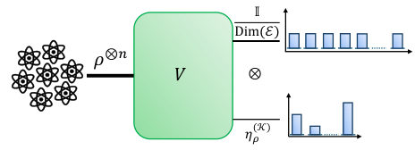
<figcaption class="paper-figure-caption"><b>Fig 1.</b> FIG. 1. Conversion of an n-copy i.i.d. state ρ⊗n into its charge– entropy normal form by a unitary V that depends only on the charge– entropy equivalence class containing ρ. The first component is max- imally mixed, with its dimension and associated charges determined solely by the entropy and average charges of ρ, whereas the second component retains the explicit dependence on ρ, with its associated charge operators depending explicitly on the total charges L×n c .</figcaption>
</figure>
<figure class="paper-figure-card">

<figcaption class="paper-figure-caption"><b>Fig 2.</b> FIG. 2. Transformation of ρ⊗n into σ⊗n, where ρ and σ belong to the same charge–entropy equivalence class, assisted by a sublinear- sized ancilla. The unitary V maps ρ⊗n to the charge–entropy normal form τ(E) ⊗η(K) ρ with error at most δ(ϵn). Since the linearly supported component τ(E) is identical for states within the same charge–entropy equivalence class, the desired transformation is achieved by swap- ping η(K) ρ with an ancilla prepared in the state η(K) σ , followed by V†. The total transformation error is at most 2δ(ϵn), accounting for the errors incurred in applying V and V†.</figcaption>
</figure>
<figure class="paper-figure-card">
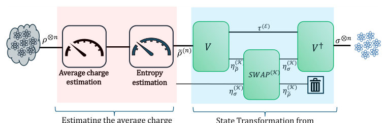
<figcaption class="paper-figure-caption"><b>Fig 3.</b> FIG. 3. Schematic illustration of universal thermodynamic state transformations from unknown quantum states. Given n copies of an unknown initial state ρ⊗n, one first performs a charge-preserving measurement to estimate the entropy and average charges. Once these quantities are determined, one applies a state-transformation protocol that depends only on the estimated entropy and average charges. Combining these two steps—estimation of the entropy and average charges, followed by the corresponding state-transformation protocol—yields a universal transformation protocol.</figcaption>
</figure>
<figure class="paper-figure-card">

<figcaption class="paper-figure-caption"><b>Fig 4.</b> FIG. 4. Energy–entropy diagram illustrating the maximum ex- tractable work per copy from ρ. The diagram shows that, to extract the maximum amount of work from ρ, one must transform it into the Gibbs state τρ that has the same entropy as ρ and is defined with re- spect to the same Hamiltonian.</figcaption>
</figure>
</div>

<p><strong>Summary.</strong> This theoretical work develops a universal framework for quantum thermodynamics applicable when the initial quantum state is unknown. By analyzing the state within a 'charge-entropy equivalence class,' the authors show that optimal work extraction remains achievable asymptotically. The key breakthrough is developing measurement protocols that estimate necessary state parameters with minimal disturbance, thus extending resource theory beyond state-aware settings.</p>
<p><strong>Why it may be interesting.</strong> This work provides a powerful generalization of resource theories, showing that fundamental thermodynamic limits can be robustly established even when experimental measurements are inherently limited by incomplete state knowledge.</p>
<details>
<summary>Detailed structure</summary>
<p><strong>Main problem.</strong> The paper addresses how to perform thermodynamic state transformations (work and heat) when the initial quantum state is unknown, moving beyond protocols that require full state knowledge.</p>
<p><strong>Main result.</strong> A universal, reference-frame-free framework is established showing that optimal work extraction can be achieved asymptotically even without microscopic knowledge of the initial state.</p>
<p><strong>Method.</strong> The authors develop protocols based on the charge-entropy equivalence class, utilizing coarse-grained measurements on multiple copies of the state to estimate necessary thermodynamic parameters.</p>
<p><strong>Model / system.</strong> The study concerns quantum thermodynamic state transformations for i.i.d. copies of a quantum state $
ho$ in a general Hilbert space, analyzed within the resource theory of work and heat.</p>
<p><strong>Key observables.</strong> Entropy $S(
ho)$, expectation values of mutually commuting conserved charges $  ext{Tr}(
ho L_i)$, and the transformation error (quantified by trace distance).</p>
<p><strong>Important parameters / regimes.</strong> The number of system copies ($n$), the decay rate of the transformation error (super-polynomial decay), and the required accuracy of state estimation.</p>
<p><strong>Assumptions / limitations.</strong> The analysis assumes the existence of a charge-entropy equivalence class and relies on the ability to estimate entropy and charges with vanishingly small disturbance using coarse-grained measurements.</p>
<p><strong>Figures summary.</strong> Figure 1 illustrates the conversion of an $n$-copy state into its charge–entropy normal form; Figure 2 illustrates the transformation between two states in the same class using an ancilla, showing the error decay.</p>
<p><strong>Paper structure.</strong> The paper progresses by first defining the universal framework for state transformations within an equivalence class, then developing techniques to estimate the necessary state parameters (entropy and charges) from unknown copies, and finally applying this to demonstrate universal work extraction.</p>
</details>
<details>
<summary>Abstract</summary>
<p>We study thermodynamic state transformations in the resource theory of work and heat when the initial quantum state is unknown. Moving beyond state-dependent protocols, we develop a universal framework in which a single transformation applies to all admissible input states. For mutually commuting conserved charges, we construct charge-conserving protocols whose transformation error, quantified by trace distance, decays super-polynomially with the number of system copies. As an application, we demonstrate universal work extraction: asymptotically optimal work can be extracted without microscopic knowledge of the initial state, with a super-polynomially small error. Our results show that thermodynamic state transformations remain achievable under limited prior information and establish a universal framework for resource-theoretic thermodynamics beyond the state-aware setting.</p>
</details>
<p><sub><a href="#top">↑ back to top</a></sub></p>

<p><a id="paper-2609.10508"></a></p>
<h3 id="information-causality-characterizes-the-set-of-quantum-correlations-in-the-simplest-bell-scenario"><a href="http://arxiv.org/abs/2609.10508v1">Information Causality Characterizes the Set of Quantum Correlations in the Simplest Bell Scenario</a></h3>
<p><strong>Authors:</strong> Mariami Gachechiladze, Nikolai Miklin<br>
<strong>Type:</strong> theory · <strong>Category:</strong> other · <strong>PDF:</strong> <a href="https://arxiv.org/pdf/2609.10508v1">https://arxiv.org/pdf/2609.10508v1</a><br>
<strong>Analysis basis:</strong> full PDF text, analyzed in chunks
<strong>Topic relevance:</strong> <code>quantum measurements</code> <strong>2/5</strong></p>
<div class="figure-strip-hint">↔ Scroll figures horizontally</div>
<div class="paper-figures-scroll">
<figure class="paper-figure-card">

<figcaption class="paper-figure-caption"><b>Fig 1.</b> Figure 1. The scenario of information causality. Alice receives two random bits x0, x1, which may be correlated. Bob re- ceives a random bit y independent of x0 and x1. In this work, the parties communicate through a noisy channel that takes the tuple (x0, x1, a) as input and produces a bit outcome m′. The parties assist their communication with a shared non- signaling resource with binary inputs and outputs.</figcaption>
</figure>
</div>

<p><strong>Summary.</strong> This paper uses the Information Causality principle to derive precise mathematical constraints on quantum correlations in a simple Bell test setting. The authors successfully show that this generalized IC principle is a stronger constraint than previously known bounds, such as Macroscopic Locality. This work strengthens the theoretical understanding of how information flow limits nonlocality in quantum physics.</p>
<p><strong>Why it may be interesting.</strong> While the focus is on Bell nonlocality, the rigorous derivation of fundamental constraints using information-theoretic principles provides a systematic methodology applicable to understanding resource theories in quantum information and open quantum systems.</p>
<details>
<summary>Detailed structure</summary>
<p><strong>Main problem.</strong> The paper aims to determine if the physical principle of Information Causality (IC) can precisely characterize the boundary of quantum correlations in the simplest bipartite Bell scenario, surpassing existing bounds like Uffink's inequality.</p>
<p><strong>Main result.</strong> The generalized Information Causality principle was shown to exactly characterize the quantum correlation region for two binary measurements, leading directly to the Tsirelson-Landau-Masanes (TLM) criterion. Furthermore, the authors proved that generalized IC is strictly stronger than Macroscopic Locality in this scenario.</p>
<p><strong>Method.</strong> The analysis combines a generalized formulation of IC for correlated inputs with a novel communication protocol, utilizing the vanishing channel capacity limit and advanced mathematical techniques like L'Hopital's rule to derive constraints.</p>
<p><strong>Model / system.</strong> The study focuses on the simplest bipartite Bell scenario involving two binary measurements per party (Alice and Bob) and analyzing the constraints imposed by information flow through a noisy communication channel.</p>
<p><strong>Key observables.</strong> Information mutual information terms (I), the Tsirelson-Landau-Masanes (TLM) criterion, and the correlators $\langle a^x b^y 
angle$.</p>
<p><strong>Important parameters / regimes.</strong> The channel capacity limit ($C 	o 0$), and the noise strength parameter $\epsilon_c$.</p>
<p><strong>Assumptions / limitations.</strong> The derivation relies on specific parametrizations of the communication channel and the ability to take limits using L'Hopital's rule.</p>
<p><strong>Figures summary.</strong> Figure 1 illustrates the setup for information causality involving correlated inputs, a noisy channel output, and a shared non-signaling resource output.</p>
<p><strong>Paper structure.</strong> The paper progresses by first establishing the general IC constraint, then applying it to the simplest Bell scenario, deriving the TLM criterion, and finally comparing the strength of generalized IC against Macroscopic Locality by constructing specific violating correlations.</p>
</details>
<details>
<summary>Abstract</summary>
<p>Information causality (IC) was introduced as a physical principle constraining correlations in non-signaling theories. Whether it can recover the exact quantum correlation boundary, beyond Uffink's inequality, has remained an open question. Here, we combine its generalized formulation for correlated inputs with a new communication protocol to derive quantum Bell inequalities that exactly characterize the quantum correlations in the simplest bipartite Bell scenario, with two binary measurements. In particular, we derive the Tsirelson-Landau-Masanes criterion directly from IC. Thus, the generalized IC implies macroscopic locality, while we also present macroscopically local correlations that violate the generalized IC. This establishes that generalized IC is a strictly stronger principle in this scenario. Together with our earlier result that generalized IC implies a nontrivial communication complexity principle, these findings strengthen the role of information causality in explaining the limits of quantum nonlocality and provide a systematic route to deriving tighter bounds on the set of quantum correlations in more general Bell scenarios.</p>
</details>
<p><sub><a href="#top">↑ back to top</a></sub></p>

<p><a id="paper-2609.10157"></a></p>
<h3 id="quantum-barankin-bounds-beyond-local-unbiasedness-analytic-results-for-gaussian-states-via-a-right-division-framework"><a href="http://arxiv.org/abs/2609.10157v1">Quantum Barankin bounds beyond local unbiasedness: Analytic results for Gaussian states via a right-division framework</a></h3>
<p><strong>Authors:</strong> Maximilian Reichert, Javier Navarro, Gerardo Adesso, Manuel Gessner, Mikel Sanz<br>
<strong>Type:</strong> theory · <strong>Category:</strong> other · <strong>PDF:</strong> <a href="https://arxiv.org/pdf/2609.10157v1">https://arxiv.org/pdf/2609.10157v1</a><br>
<strong>Analysis basis:</strong> full PDF text, analyzed in chunks
<strong>Topic relevance:</strong> <code>quantum measurements</code> <strong>2/5</strong></p>
<div class="figure-strip-hint">↔ Scroll figures horizontally</div>
<div class="paper-figures-scroll">
<figure class="paper-figure-card">
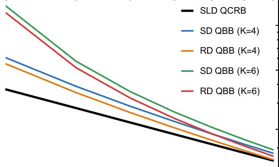
<figcaption class="paper-figure-caption"><b>Fig 1.</b> FIG. 1: Comparison of the RD QBB, SD QBB, and SLD QCRB for qubit phase estimation with parameters n = (0, 0, 1), r0 = 1 10(0, 3, 0) and λ = π/4. The y-axis shows the MSE while the x-axis shows the number of copies N. To avoid the potential divergences studied in [40, 41], we only show the region where the bound is finite (N &gt; 2). The K test points are equidistributed in the interval [0, π</figcaption>
</figure>
<figure class="paper-figure-card">

<figcaption class="paper-figure-caption"><b>Fig 2.</b> FIG. 2: Single mode phase estimation with λ = π</figcaption>
</figure>
<figure class="paper-figure-card">
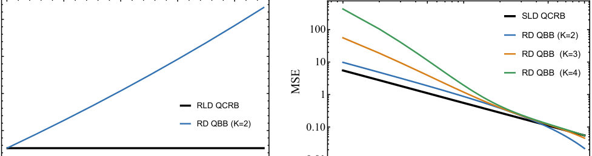
<figcaption class="paper-figure-caption"><b>Fig 3.</b> FIG. 3: Quantum thermometry with N copies, assuming ω = 1 and a true parameter value λ = 2. For all RD QBB the value of γ is chosen to force the unbiasedness condition at all test points.</figcaption>
</figure>
<figure class="paper-figure-card">
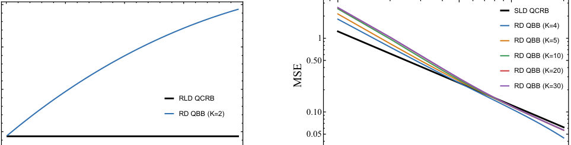
<figcaption class="paper-figure-caption"><b>Fig 4.</b> FIG. 4: Loss sensing with N copies, assuming a true transmissivity λ = 1/4 and displacement amplitude α = 1/2. For all RD QBB the value of γ is chosen to force the unbiasedness condition at all test points.</figcaption>
</figure>
</div>

<p><strong>Summary.</strong> This theoretical paper develops a quantum generalization of the Barankin bound for quantum parameter estimation, offering a tighter lower bound than the standard Quantum Cramér-Rao Bound. By utilizing a novel non-symmetric right-division superoperator, the authors derive analytic formulas specifically for Gaussian states. This improved bound is particularly useful for analyzing quantum sensing scenarios exhibiting threshold effects in the few-shot regime.</p>
<p><strong>Why it may be interesting.</strong> It provides a rigorous, analytically tractable tool (the right-division bound) to set fundamental limits on measurement precision that can surpass the standard QCRB, which is crucial for designing optimal quantum sensing protocols.</p>
<details>
<summary>Detailed structure</summary>
<p><strong>Main problem.</strong> The paper aims to establish a quantum version of the Barankin bound as a superior alternative to the standard Quantum Cramér-Rao Bound (QCRB) for quantum parameter estimation.</p>
<p><strong>Main result.</strong> The authors derive a novel quantum Barankin bound using a non-symmetric right-division superoperator, yielding analytic expressions for Gaussian states that are shown to be tighter than previous bounds.</p>
<p><strong>Method.</strong> The methodology involves extending classical bounding techniques (like the Barankin bound) into the quantum domain using concepts like right-division superoperators and analyzing the structure of the resulting matrices for Gaussian states.</p>
<p><strong>Model / system.</strong> The theory is applied to general quantum parameter estimation problems, with specific analytical derivations focused on systems whose states are Gaussian (e.g., those described by exponential operators).</p>
<p><strong>Key observables.</strong> Mean Squared Error (MSE) of estimators, Quantum Fisher Information (QFI), and the Barankin matrix ($\mathbf{Q}(R)_{	ext{BB}}$).</p>
<p><strong>Important parameters / regimes.</strong> The bound's performance in the few-shot regime, where standard QCRB approaches fail to capture certain physical effects (threshold effect).</p>
<p><strong>Assumptions / limitations.</strong> The derivation relies on the existence and properties of the right-division superoperator and the assumption that certain required traces are trace-class.</p>
<p><strong>Figures summary.</strong> Not specified in the notes, but the structure implies comparisons between different bounds (QCRB vs. Barankin bounds) for various examples.</p>
<p><strong>Paper structure.</strong> The paper progresses by first introducing the quantum Barankin bound concept, deriving the novel bound using the right-division operator, comparing it to existing symmetric bounds, and finally applying the derived analytic formulas to specific examples, particularly Gaussian states.</p>
</details>
<details>
<summary>Abstract</summary>
<p>We propose a quantum version of the Barankin bound as an alternative to the quantum Cramér-Rao bound for quantum parameter estimation. The quantum Barankin bound provides a lower bound on the mean squared error of estimators satisfying arbitrarily chosen bias constraints at arbitrarily chosen parameter points. In particular, unbiasedness over the entire parameter space can be imposed, yielding precision limits for globally unbiased quantum parameter estimation. In contrast to the recently derived quantum Barankin bound, which is based on a symmetric division superoperator, our bound is based on a nonsymmetric right-division superoperator. This formulation enables us to find analytic expressions for the Barankin matrix for Gaussian states, which allows for an efficient calculation of the bound. We demonstrate the usefulness of our results by applying them to various examples that exhibit the threshold effect in the few-shot regime, which is invisible to the standard quantum Cramér-Rao bound approach.</p>
</details>
<p><sub><a href="#top">↑ back to top</a></sub></p>

<p><a id="paper-2609.09931"></a></p>
<h3 id="revealing-the-quantum-signature-of-gravity-via-gravitational-waves"><a href="http://arxiv.org/abs/2609.09931v1">Revealing the Quantum Signature of Gravity via Gravitational Waves</a></h3>
<p><strong>Authors:</strong> Partha Nandi<br>
<strong>Type:</strong> theory · <strong>Category:</strong> other · <strong>PDF:</strong> <a href="https://arxiv.org/pdf/2609.09931v1">https://arxiv.org/pdf/2609.09931v1</a><br>
<strong>Analysis basis:</strong> full PDF text, analyzed in chunks
<strong>Topic relevance:</strong> <code>quantum measurements</code> <strong>2/5</strong></p>
<div class="figure-strip-hint">↔ Scroll figures horizontally</div>
<div class="paper-figures-scroll">
<figure class="paper-figure-card">
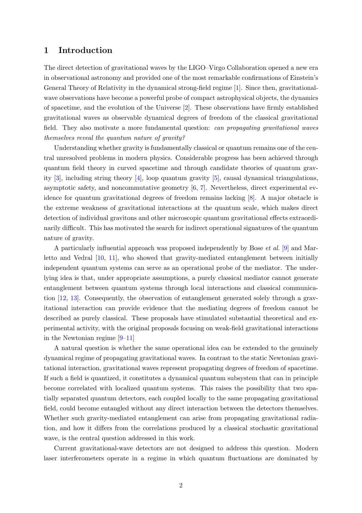
<figcaption class="paper-figure-caption"><b>Fig 1.</b> Low-resolution page preview, page 2</figcaption>
</figure>
<figure class="paper-figure-card">

<figcaption class="paper-figure-caption"><b>Fig 2.</b> Low-resolution page preview, page 3</figcaption>
</figure>
<figure class="paper-figure-card">
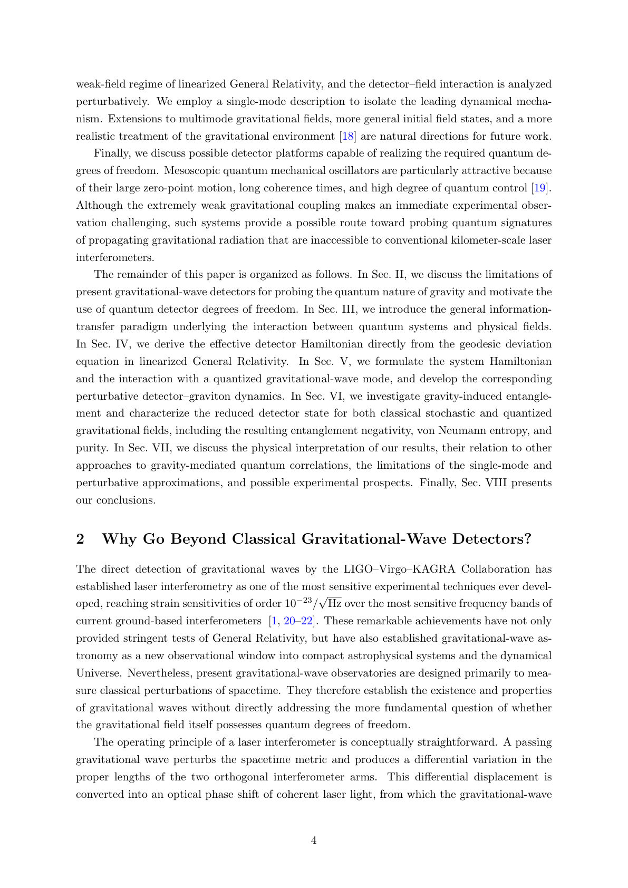
<figcaption class="paper-figure-caption"><b>Fig 3.</b> Low-resolution page preview, page 4</figcaption>
</figure>
<figure class="paper-figure-card">
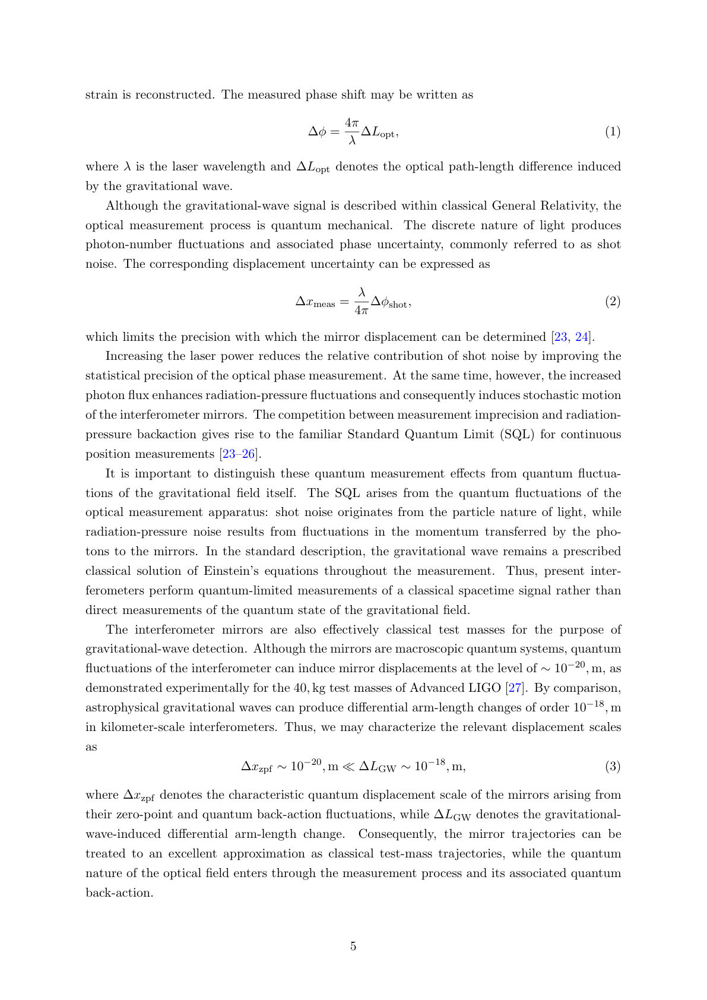
<figcaption class="paper-figure-caption"><b>Fig 4.</b> Low-resolution page preview, page 5</figcaption>
</figure>
<figure class="paper-figure-card">
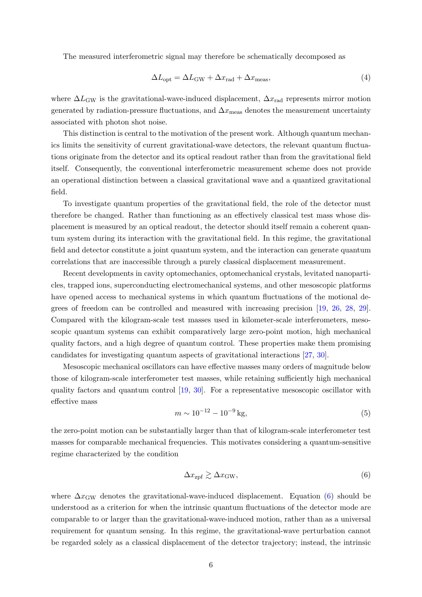
<figcaption class="paper-figure-caption"><b>Fig 5.</b> Low-resolution page preview, page 6</figcaption>
</figure>
</div>

<p><strong>Summary.</strong> This work establishes a quantum information framework to test quantum gravity using gravitational waves. By analyzing the quantum dynamics of coupled detectors, the authors show that only quantized gravitational fields can generate genuine entanglement between detectors. This provides a concrete, measurable signature for quantum gravity effects mediated by spacetime ripples.</p>
<p><strong>Why it may be interesting.</strong> It provides a clear, information-theoretic diagnostic tool—detecting entanglement—to distinguish between classical and quantum gravitational interactions, which is highly relevant for quantum optics and open quantum systems.</p>
<details>
<summary>Detailed structure</summary>
<p><strong>Main problem.</strong> The paper investigates whether propagating gravitational waves can serve as operational probes to detect the quantum nature of gravity, moving beyond classical spacetime perturbations.</p>
<p><strong>Main result.</strong> Quantized gravitational waves coherently mediate entanglement between spatially separated detectors, a signature absent when the field is treated classically as a stochastic background.</p>
<p><strong>Method.</strong> The authors develop a unified framework combining spacetime geometry, quantum information theory, and gravitational-wave physics, analyzing the quantum dynamics of coupled detector subsystems.</p>
<p><strong>Model / system.</strong> The model involves localized quantum oscillators (detectors) coupled to a propagating gravitational field, starting from the geodesic deviation equation in linearized General Relativity.</p>
<p><strong>Key observables.</strong> Entanglement (e.g., negativity), quantum coherence, quantum memory, and the comparison between mixedness (classical) and genuine quantum correlations (quantized).</p>
<p><strong>Important parameters / regimes.</strong> The analysis is performed in the weak-field regime of linearized General Relativity, focusing on the comparison between classical and quantum field treatments.</p>
<p><strong>Assumptions / limitations.</strong> The study relies on perturbative treatments, a single-mode description, and is an operational study rather than a full theory of quantum gravity.</p>
<p><strong>Paper structure.</strong> The paper builds a theoretical framework by deriving the detector Hamiltonian from geometry, constructing the full quantum dynamics, and then comparing the resulting quantum correlations (entanglement) against the predictions of a purely classical stochastic field.</p>
</details>
<details>
<summary>Abstract</summary>
<p>Can propagating gravitational waves serve as operational probes of the quantum nature of gravity? We address this question by developing a unified theoretical framework that combines spacetime geometry, quantum information, and gravitational-wave physics. Starting from the geodesic deviation equation in linearized General Relativity, we derive the effective detector Hamiltonian directly from spacetime geometry and construct the complete quantum dynamics for detector subsystems interacting with both classical and quantized propagating gravitational-wave fields. This unified formulation enables a direct comparison between classical and quantum descriptions of gravitational radiation within the same physical framework. We demonstrate that classical gravitational-wave backgrounds can induce mixedness in the detector state but cannot generate genuine quantum correlations between the detector subsystems. In contrast, quantized gravitational waves coherently mediate gravity-induced entanglement, quantum coherence, quantum memory, and nonclassical correlations, providing clear operational signatures of the quantum nature of propagating gravitational radiation. We further discuss how mesoscopic quantum mechanical oscillators offer a promising route towards experimentally probing these effects. Our results establish a geometric and quantum-information-based framework for exploring quantum gravity through propagating gravitational waves.</p>
</details>
<p><sub><a href="#top">↑ back to top</a></sub></p>
<hr>
<p>
<a href="index.html">← Index</a>
 · <a href="papers_03.html">← Previous</a> · <a href="papers_05.html">Next →</a>
</p>
<hr>

</body>
</html>
